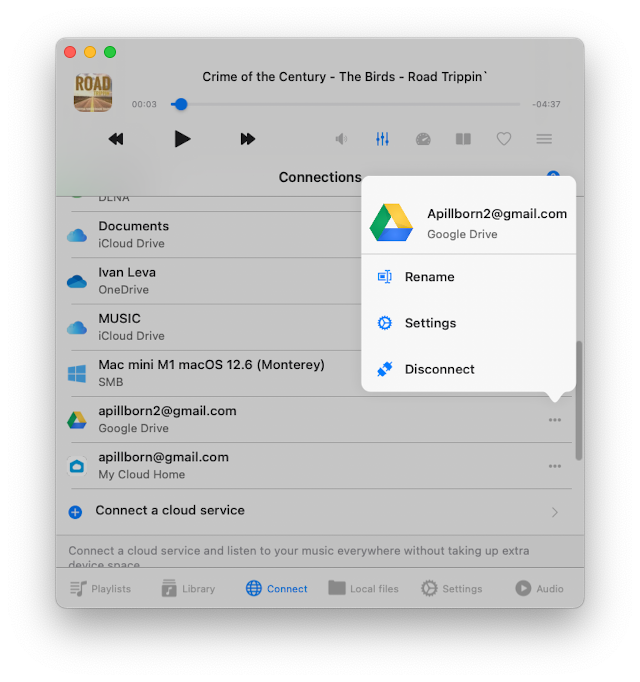
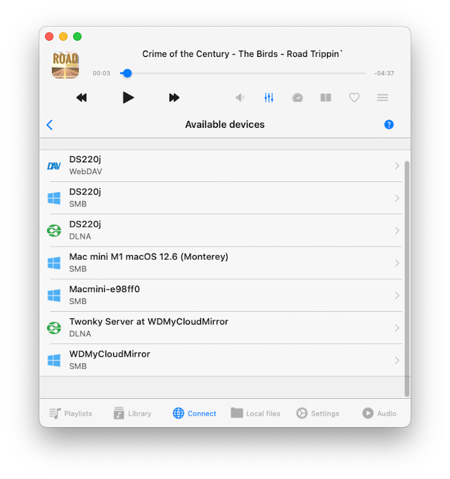
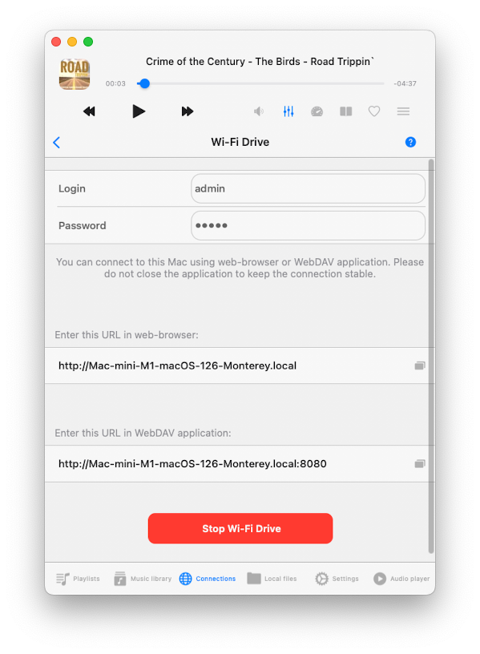
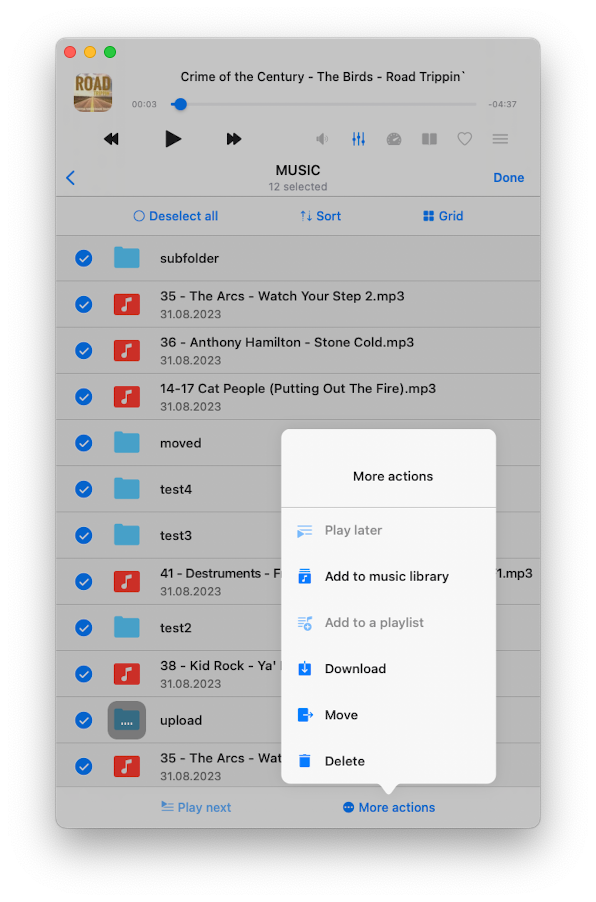
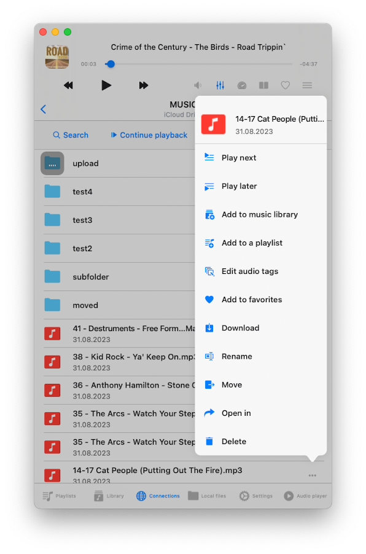

<div id="content-wrapper"><div class="ZL4A4N" data-hook="post-page"><div class=""><div class="" data-hook="slot-placeholder-TPAMultiSection_jvugchim.above-content-1" id="TPAMultiSection_jvugchim.above-content-1"></div></div><div class=""><div class="" data-hook="slot-placeholder-TPAMultiSection_jvugchim.above-content-2" id="TPAMultiSection_jvugchim.above-content-2"></div></div><div class="HcBlwg"><div class="zp8IQu"><div><div class="EcwjNF"><article class="tgMH9T" data-hook="post"><section class="UYw9XC" data-hook="post-hero-image"></section><div class="HW6ttf"><header class="PhCafd"><div class="PKQ95p"><div class="MbPQSQ"><div class="apmiGT" data-hook="post-title"><h1 class="H3vOVf" data-hook="post-title">Evermusic Guide: Connections</h1></div><div class="a5JqMF"><ul class="NtBDdE"><li class="MABqta"><div class="bZrSjY" style="width:32px;height:32px"><wow-image class="TI1b5D lR3yj5 fluid-avatar-image bok7Ik" data-bg-effect-name="" data-has-ssr-src="" data-image-info='{"displayMode":"fill","targetWidth":32,"targetHeight":32,"isSEOBot":false,"encoding":"AVIF","imageData":{"width":32,"height":32,"uri":"21260c_a693a1db9b5b41199827fb5e97aa89a1%7Emv2.png","name":"","displayMode":"fill"}}' data-motion-part="BG_IMG undefined" style="--wix-img-max-width:max(32px, 100%)"></wow-image></div><a class="IkAhjA" data-hook="profile-link" href="https://www.everappz.com/profile/serviceleshko/profile"><span data-hook="user-name">admin</span></a></li><li class="wBTynn"><span class="time-ago" data-hook="time-ago" title="Jan 1, 2020">Jan 1, 2020</span></li><li class="F56Ope"><span data-hook="time-to-read" title="11 min read">11 min read</span></li></ul><div class="hSZsuG"><button aria-label="More actions" aria-pressed="false" class="MHuRVq" data-hook="more-button" id="more-button-2137bac5-9432-4b0c-be70-e2bab14cc564" type="button"><svg aria-hidden="true" viewbox="0 0 19 19" width="19" xmlns="http://www.w3.org/2000/svg"><path d="M2.44398805,5.99973295 C1.62345525,5.9690612 0.980075653,5.28418875 1.00047182,4.46312144 C1.02086799,3.64205413 1.69745853,2.98998831 2.51850166,3.0001164 C3.33954478,3.01024449 3.99985313,3.67880182 4,4.50012255 C3.98424812,5.34399206 3.28763905,6.0153508 2.44398805,5.99973295 L2.44398805,5.99973295 Z M2.44398805,10.9997329 C1.62345525,10.9690612 0.980075653,10.2841888 1.00047182,9.46312144 C1.02086799,8.64205413 1.69745853,7.98998831 2.51850166,8.0001164 C3.33954478,8.01024449 3.99985313,8.67880182 4,9.50012255 C3.98424812,10.3439921 3.28763905,11.0153508 2.44398805,10.9997329 L2.44398805,10.9997329 Z M2.44398805,15.9997329 C1.62345525,15.9690612 0.980075653,15.2841888 1.00047182,14.4631214 C1.02086799,13.6420541 1.69745853,12.9899883 2.51850166,13.0001164 C3.33954478,13.0102445 3.99985313,13.6788018 4,14.5001225 C3.98424812,15.3439921 3.28763905,16.0153508 2.44398805,15.9997329 L2.44398805,15.9997329 Z"></path></svg></button></div></div></div><p class="NfKpG_">Updated: <span class="time-ago" data-hook="time-ago" title="Dec 8, 2024">Dec 8, 2024</span></p></div></header><section class="VQDdIN" data-hook="post-description"><div class="moHCnT"><div class="moHCnT"><div class="fTEXDR" data-rce-version="10.134.2"><div class="_8HJdY" data-id="content-viewer" dir="ltr" style="--ricos-text-color:rgb(var(--textParagraphColor-rgb));--ricos-text-color-tuple:var(--textParagraphColor-rgb);--ricos-action-color:rgb(var(--postButtonBackgroundColor));--ricos-action-color-tuple:var(--postButtonBackgroundColor);--ricos-background-color:rgb(var(--postBackgroundColor));--ricos-background-color-tuple:var(--postBackgroundColor);--ricos-fallback-color:rgb(0, 0, 0);--ricos-fallback-color-tuple:0, 0, 0;--ricos-settings-action-color:rgb(0, 0, 0);--ricos-settings-action-color-tuple:0, 0, 0;--ricos-text-on-action-color:rgb(var(--postButtonTextColor));--ricos-text-on-action-color-tuple:var(--postButtonTextColor);--ricos-action-color-fallback:rgb(0, 0, 0);--ricos-action-color-fallback-tuple:0, 0, 0;--ricos-custom-p-font-weight:var(--textParagraphFont-weight);--ricos-custom-p-font-style:var(--textParagraphFont-style);--ricos-custom-p-line-height:max(calc(var(--textParagraphFont-size) * 1.5), var(--textParagraphFont-line-height));--ricos-custom-p-font-size:var(--textParagraphFont-size);--ricos-custom-p-font-family:var(--textParagraphFont-family);--ricos-custom-p-text-decoration:var(--textParagraphFont-text-decoration);--ricos-custom-p-color:rgb(var(--textParagraphColor));--ricos-custom-h1-font-weight:var(--textH1Font-weight);--ricos-custom-h1-font-style:var(--textH1Font-style);--ricos-custom-h1-line-height:var(--textH1Font-line-height);--ricos-custom-h1-font-size:var(--textH1Font-size);--ricos-custom-h1-font-family:var(--textH1Font-family);--ricos-custom-h1-text-decoration:var(--textH1Font-text-decoration);--ricos-custom-h1-color:rgb(var(--textH1Color));--ricos-custom-h2-font-weight:var(--textH2Font-weight);--ricos-custom-h2-font-style:var(--textH2Font-style);--ricos-custom-h2-line-height:var(--textH2Font-line-height);--ricos-custom-h2-font-size:var(--textH2Font-size);--ricos-custom-h2-font-family:var(--textH2Font-family);--ricos-custom-h2-text-decoration:var(--textH2Font-text-decoration);--ricos-custom-h2-color:rgb(var(--textH2Color));--ricos-custom-h3-font-weight:var(--textH3Font-weight);--ricos-custom-h3-font-style:var(--textH3Font-style);--ricos-custom-h3-line-height:var(--textH3Font-line-height);--ricos-custom-h3-font-size:var(--textH3Font-size);--ricos-custom-h3-font-family:var(--textH3Font-family);--ricos-custom-h3-text-decoration:var(--textH3Font-text-decoration);--ricos-custom-h3-color:rgb(var(--textH3Color));--ricos-custom-h4-font-weight:var(--textH4Font-weight);--ricos-custom-h4-font-style:var(--textH4Font-style);--ricos-custom-h4-line-height:var(--textH4Font-line-height);--ricos-custom-h4-font-size:var(--textH4Font-size);--ricos-custom-h4-font-family:var(--textH4Font-family);--ricos-custom-h4-text-decoration:var(--textH4Font-text-decoration);--ricos-custom-h4-color:rgb(var(--textH4Color));--ricos-custom-h5-font-weight:var(--textH5Font-weight);--ricos-custom-h5-font-style:var(--textH5Font-style);--ricos-custom-h5-line-height:var(--textH5Font-line-height);--ricos-custom-h5-font-size:var(--textH5Font-size);--ricos-custom-h5-font-family:var(--textH5Font-family);--ricos-custom-h5-text-decoration:var(--textH5Font-text-decoration);--ricos-custom-h5-color:rgb(var(--textH5Color));--ricos-custom-h6-font-weight:var(--textH6Font-weight);--ricos-custom-h6-font-style:var(--textH6Font-style);--ricos-custom-h6-line-height:var(--textH6Font-line-height);--ricos-custom-h6-font-size:var(--textH6Font-size);--ricos-custom-h6-font-family:var(--textH6Font-family);--ricos-custom-h6-text-decoration:var(--textH6Font-text-decoration);--ricos-custom-h6-color:rgb(var(--textH6Color));--ricos-custom-quote-line-height:var(--textQuoteFont-line-height);--ricos-custom-quote-font-size:var(--textQuoteFont-size);--ricos-custom-quote-font-style:var(--textQuoteFont-style);--ricos-custom-quote-font-family:var(--textQuoteFont-family);--ricos-custom-quote-font-weight:var(--textQuoteFont-weight);--ricos-custom-quote-text-decoration:var(--textQuoteFont-text-decoration);--ricos-custom-quote-color:rgb(var(--textQuoteColor));--ricos-custom-quote-border-color:rgb(var(--textLinksAndHashtagsColor));--ricos-custom-quote-margin-inline-start:var(--ricosQuoteMarginInlineStart);--ricos-custom-code-block-line-height:1.5;--ricos-custom-link-font-style:inherit;--ricos-custom-link-font-weight:inherit;--ricos-custom-link-text-decoration:inherit;--ricos-custom-link-color:rgb(var(--textLinksAndHashtagsColor));--ricos-custom-hashtag-font-style:inherit;--ricos-custom-hashtag-font-weight:inherit;--ricos-custom-hashtag-text-decoration:inherit;--ricos-custom-hashtag-color:rgb(var(--textLinksAndHashtagsColor));--ricos-custom-footer-toolbar-padding-inline-start:var(--ricosFooterPadding);--ricos-custom-footer-toolbar-padding-inline-end:var(--ricosFooterPadding);--ricos-custom-editor-add-plugin-button-position-inline-start:var(--ricosAddPluginButtonStart);--ricos-breakout-normal-padding-start:var(--ricosNormalPadding);--ricos-breakout-normal-padding-end:var(--ricosNormalPadding);--ricos-breakout-full-width-padding-start:var(--ricosFullWidthPadding);--ricos-breakout-full-width-padding-end:var(--ricosFullWidthPadding)"><div class="WZmlO"><div data-hook="rcv-block-first" type="first"></div><div class="Qvle0"><div data-breakout="normal"><p class="_04qQG jtShe _6XZJW UGHSE" dir="auto" id="viewer-foo" style="padding-top:0px;padding-bottom:0px;line-height:max(0.8em, 2em)"><span class="mVzZr"><span style="font-size:16px"><span>On this screen, you can connect various sources containing your music. You can integrate popular cloud services like Dropbox, Google Drive, and others, as well as connect your Mac or PC. Additionally, you have the option to import music from Apple Time Capsule or WD Cloud Mirror.</span></span></span></p></div><div data-hook="rcv-block1" type="paragraph"></div><div data-breakout="normal"><div class="_04qQG jtShe _6XZJW UGHSE" dir="auto" id="viewer-1niei" style="padding-top:0px;padding-bottom:0px;line-height:max(0.8em, 2em)"><span class="mVzZr"><br role="presentation"/></span></div></div><div data-hook="rcv-block2" type="empty-line"></div><div data-breakout="normal"><p class="_04qQG jtShe _6XZJW UGHSE" dir="auto" id="viewer-292hr" style="padding-top:0px;padding-bottom:0px;line-height:max(0.8em, 2em)"><span class="mVzZr"><strong style="font-weight:700"><span style="font-size:16px"><span>To connect a cloud service:</span></span></strong></span></p></div><div data-hook="rcv-block3" type="paragraph"></div><div data-breakout="normal"><p class="_04qQG jtShe _6XZJW UGHSE" dir="auto" id="viewer-akpcs" style="padding-top:0px;padding-bottom:0px;line-height:max(0.8em, 2em)"><span class="mVzZr"><span style="font-size:16px"><span>- Open the 'Connections' tab</span></span></span></p></div><div data-hook="rcv-block4" type="paragraph"></div><div data-breakout="normal"><p class="_04qQG jtShe _6XZJW UGHSE" dir="auto" id="viewer-f4ah1" style="padding-top:0px;padding-bottom:0px;line-height:max(0.8em, 2em)"><span class="mVzZr"><span style="font-size:16px"><span>- Select 'Connect a cloud service' from the menu</span></span></span></p></div><div data-hook="rcv-block5" type="paragraph"></div><div data-breakout="normal"><p class="_04qQG jtShe _6XZJW UGHSE" dir="auto" id="viewer-d25tp" style="padding-top:0px;padding-bottom:0px;line-height:max(0.8em, 2em)"><span class="mVzZr"><span style="font-size:16px"><span>- Choose your desired cloud service from the list</span></span></span></p></div><div data-hook="rcv-block6" type="paragraph"></div><div data-breakout="normal"><p class="_04qQG jtShe _6XZJW UGHSE" dir="auto" id="viewer-1h0m1" style="padding-top:0px;padding-bottom:0px;line-height:max(0.8em, 2em)"><span class="mVzZr"><span style="font-size:16px"><span>- Enter your credentials, and tap 'Done.' </span></span></span></p></div><div data-hook="rcv-block7" type="paragraph"></div><div data-breakout="normal"><div class="_04qQG jtShe _6XZJW UGHSE" dir="auto" id="viewer-89ucp" style="padding-top:0px;padding-bottom:0px;line-height:max(0.8em, 2em)"><span class="mVzZr"><br role="presentation"/></span></div></div><div data-hook="rcv-block8" type="empty-line"></div><div data-breakout="normal"><div class="_42tfF" id="viewer-49t6d"><div class="_16CGD abqz1"><figure class="Z--PZ" data-hook="figure-IMAGE"><div class="_8c85B" data-hook="image-viewer"><div class="zPKNC uh6iL eO1yr" data-hook="image-viewer-49t6d" id="49t6d" style="--dim-height:682;--dim-width:613;--ricos-image-default-border-color:unset"><wow-image class="undefined P6NQu" data-animate-blur="" data-bg-effect-name="" data-has-ssr-src="" data-image-info='{"containerId":"49t6d","displayMode":"fill","isLQIP":true,"isSEOBot":false,"lqipTransition":"blur","encoding":"AVIF","imageData":{"width":613,"height":682,"uri":"21260c_f3f30523c16a45af8a7a50af24ef7951~mv2.png","name":"","displayMode":"fill"}}' data-motion-part="BG_IMG" data-transitioned="" id="21260c_f3f30523c16a45af8a7a50af24ef7951~mv2.png"></wow-image></div><button aria-label="Expand image" class="vB0h2" data-hook="image-expand-button" type="button"><svg class="vx8ar" viewbox="0 0 19 19" xmlns="http://www.w3.org/2000/svg"><path d="M15.071 8.371V4.585l-4.355 4.356a.2.2 0 0 1-.283 0l-.374-.374a.2.2 0 0 1 0-.283l4.356-4.355h-3.786a.2.2 0 0 1-.2-.2V3.2c0-.11.09-.2.2-.2H16v5.371a.2.2 0 0 1-.2.2h-.529a.2.2 0 0 1-.2-.2zm-6.5 6.9v.529a.2.2 0 0 1-.2.2H3v-5.371c0-.11.09-.2.2-.2h.529c.11 0 .2.09.2.2v3.786l4.355-4.356a.2.2 0 0 1 .283 0l.374.374a.2.2 0 0 1 0 .283L4.585 15.07h3.786c.11 0 .2.09.2.2z" fill="#000" fill-rule="nonzero"></path></svg></button></div></figure></div></div></div><div data-hook="rcv-block9" type="image"></div><div data-breakout="normal"><div class="_04qQG jtShe _6XZJW UGHSE" dir="auto" id="viewer-83gbb" style="padding-top:0px;padding-bottom:0px;line-height:max(0.8em, 2em)"><span class="mVzZr"><br role="presentation"/></span></div></div><div data-hook="rcv-block10" type="empty-line"></div><div data-breakout="normal"><p class="_04qQG jtShe _6XZJW UGHSE" dir="auto" id="viewer-5jj0n" style="padding-top:0px;padding-bottom:0px;line-height:max(0.8em, 2em)"><span class="mVzZr"><span style="font-size:16px"><span>If you encounter any issues, be sure to check your internet connection and login/password. In the Premium version of the app, you can add an unlimited number of services.</span></span></span></p></div><div data-hook="rcv-block11" type="paragraph"></div><div data-breakout="normal"><div class="_04qQG jtShe _6XZJW UGHSE" dir="auto" id="viewer-bik4d" style="padding-top:0px;padding-bottom:0px;line-height:max(0.8em, 2em)"><span class="mVzZr"><br role="presentation"/></span></div></div><div data-hook="rcv-block12" type="empty-line"></div><div data-breakout="normal"><p class="_04qQG jtShe _6XZJW UGHSE" dir="auto" id="viewer-1u8sr" style="padding-top:0px;padding-bottom:0px;line-height:max(0.8em, 2em)"><span class="mVzZr"><strong style="font-weight:700"><span style="font-size:16px"><span>Supported cloud services:</span></span></strong></span></p></div><div data-hook="rcv-block13" type="paragraph"></div><div data-breakout="normal"><p class="_04qQG jtShe _6XZJW UGHSE" dir="auto" id="viewer-er6dt" style="padding-top:0px;padding-bottom:0px;line-height:max(0.8em, 2em)"><span class="mVzZr"><span style="font-size:16px"><span>Currently, the application supports the most popular cloud services: iCloud Drive, Google Drive, Dropbox, OneDrive, Box, MEGA, Yandex.Disk, WD MyCloud Home, DLNA, MediaFire, WebDAV, SMB, pCloud, HiDrive, 百度网盘, My Cloud Home, InfiniCLOUD, Cloud </span></span><a class="WAzZp aiPD3" data-hook="web-link" href="http://Mail.ru" rel="noopener" target="_blank"><span style="font-size:16px"><span>Mail.ru</span></span></a><span style="font-size:16px"><span>, </span></span><a class="WAzZp aiPD3" data-hook="web-link" href="http://Put.io" rel="noopener" target="_blank"><span style="font-size:16px"><span>Put.io</span></span></a><span style="font-size:16px"><span>, </span></span><span style="font-size:16px"><span style="color:rgb(57, 63, 68);text-decoration:inherit"><span>MyDrive.</span></span></span></span></p></div><div data-hook="rcv-block14" type="paragraph"></div><div data-breakout="normal"><div class="_04qQG jtShe _6XZJW UGHSE" dir="auto" id="viewer-ed7ho" style="padding-top:0px;padding-bottom:0px;line-height:max(0.8em, 2em)"><span class="mVzZr"><br role="presentation"/></span></div></div><div data-hook="rcv-block15" type="empty-line"></div><div data-breakout="normal"><p class="_04qQG jtShe _6XZJW UGHSE" dir="auto" id="viewer-5efri" style="padding-top:0px;padding-bottom:0px;line-height:max(0.8em, 2em)"><span class="mVzZr"><strong style="font-weight:700"><span style="font-size:16px"><span>Security and privacy:</span></span></strong></span></p></div><div data-hook="rcv-block16" type="paragraph"></div><div data-breakout="normal"><p class="_04qQG jtShe _6XZJW UGHSE" dir="auto" id="viewer-a1snv" style="padding-top:0px;padding-bottom:0px;line-height:max(0.8em, 2em)"><span class="mVzZr"><span style="font-size:16px"><span>We use only official SDK and secure connection to interact with connected cloud services. Your login and password are not available for the application. All requests from the application to the cloud service are encrypted.</span></span></span></p></div><div data-hook="rcv-block17" type="paragraph"></div><div data-breakout="normal"><div class="_04qQG jtShe _6XZJW UGHSE" dir="auto" id="viewer-ag3ur" style="padding-top:0px;padding-bottom:0px;line-height:max(0.8em, 2em)"><span class="mVzZr"><br role="presentation"/></span></div></div><div data-hook="rcv-block18" type="empty-line"></div><div data-breakout="normal"><p class="_04qQG jtShe _6XZJW UGHSE" dir="auto" id="viewer-19cdm" style="padding-top:0px;padding-bottom:0px;line-height:max(0.8em, 2em)"><span class="mVzZr"><span style="font-size:16px"><span>When you enter your login and password the application shows you the official authorization page that is provided by the cloud service provider and all authorization process is made outside the application. The cloud service provider sends an auth token to the application after successful authorization and that token is used to make API calls.</span></span></span></p></div><div data-hook="rcv-block19" type="paragraph"></div><div data-breakout="normal"><p class="_04qQG jtShe _6XZJW UGHSE" dir="auto" id="viewer-eq2ov" style="padding-top:0px;padding-bottom:0px;line-height:max(0.8em, 2em)"><span class="mVzZr"><span style="font-size:16px"><span>​</span></span></span></p></div><div data-hook="rcv-block20" type="paragraph"></div><div data-breakout="normal"><p class="_04qQG jtShe _6XZJW UGHSE" dir="auto" id="viewer-6lak2" style="padding-top:0px;padding-bottom:0px;line-height:max(0.8em, 2em)"><span class="mVzZr"><span style="font-size:16px"><span>Auth-token is a digital key that allows third-party applications to interact with cloud storage. Auth-token is stored on your device in a secure system storage called Keychain. You can download your files from the connected cloud service to the device and those files will be placed in the app's "Documents" directory. You can remove those files anytime using the built-in file manager.</span></span></span></p></div><div data-hook="rcv-block21" type="paragraph"></div><div data-breakout="normal"><div class="_04qQG jtShe _6XZJW UGHSE" dir="auto" id="viewer-5forb" style="padding-top:0px;padding-bottom:0px;line-height:max(0.8em, 2em)"><span class="mVzZr"><br role="presentation"/></span></div></div><div data-hook="rcv-block22" type="empty-line"></div><div data-breakout="normal"><p class="_04qQG jtShe _6XZJW UGHSE" dir="auto" id="viewer-110nf" style="padding-top:0px;padding-bottom:0px;line-height:max(0.8em, 2em)"><span class="mVzZr"><span style="font-size:16px"><span>The application does not share any information from the connected cloud account. You can revoke access to your cloud account anytime by opening the account settings page on your web browser. </span></span></span></p></div><div data-hook="rcv-block23" type="paragraph"></div><div data-breakout="normal"><p class="_04qQG jtShe _6XZJW UGHSE" dir="auto" id="viewer-7v2ht" style="padding-top:0px;padding-bottom:0px;line-height:max(0.8em, 2em)"><span class="mVzZr"><span style="font-size:16px"><span>​</span></span></span></p></div><div data-hook="rcv-block24" type="paragraph"></div><div data-breakout="normal"><p class="_04qQG jtShe _6XZJW UGHSE" dir="auto" id="viewer-3sfgd" style="padding-top:0px;padding-bottom:0px;line-height:max(0.8em, 2em)"><span class="mVzZr"><strong style="font-weight:700"><span style="font-size:16px"><span>To reject auth-token:</span></span></strong></span></p></div><div data-hook="rcv-block25" type="paragraph"></div><div data-breakout="normal"><p class="_04qQG jtShe _6XZJW UGHSE" dir="auto" id="viewer-569s6" style="padding-top:0px;padding-bottom:0px;line-height:max(0.8em, 2em)"><span class="mVzZr"><span style="font-size:16px"><span>Login to your account on the web browser and navigate to the settings page. There you can find all third-party apps that are connected to your cloud account and remove any of them if you don’t want to use that application anymore. Detailed instructions available [</span></span><a class="WAzZp aiPD3" data-hook="web-link" href="https://www.everappz.com/post/how-to-disconnect-third-party-app-from-your-google-account" rel="noopener" target="_blank"><span style="font-size:16px"><u style="text-decoration:underline"><span>here</span></u></span></a><span style="font-size:16px"><span>]: </span></span></span></p></div><div data-hook="rcv-block26" type="paragraph"></div><div data-breakout="normal"><p class="_04qQG jtShe _6XZJW UGHSE" dir="auto" id="viewer-5ru0c" style="padding-top:0px;padding-bottom:0px;line-height:max(0.8em, 2em)"><span class="mVzZr"><span style="font-size:16px"><span>​</span></span></span></p></div><div data-hook="rcv-block27" type="paragraph"></div><div data-breakout="normal"><p class="_04qQG jtShe _6XZJW UGHSE" dir="auto" id="viewer-6up62" style="padding-top:0px;padding-bottom:0px;line-height:max(0.8em, 2em)"><span class="mVzZr"><span style="font-size:16px"><span>You can also disconnect the connected cloud accounts in the application and the auth token will be also removed from your device. If you remove the application from your device all downloaded data and access tokens will be also removed.</span></span></span></p></div><div data-hook="rcv-block28" type="paragraph"></div><div data-breakout="normal"><div class="_04qQG jtShe _6XZJW UGHSE" dir="auto" id="viewer-7grim" style="padding-top:0px;padding-bottom:0px;line-height:max(0.8em, 2em)"><span class="mVzZr"><br role="presentation"/></span></div></div><div data-hook="rcv-block29" type="empty-line"></div><div data-breakout="normal"><p class="_04qQG jtShe _6XZJW UGHSE" dir="auto" id="viewer-5756o" style="padding-top:0px;padding-bottom:0px;line-height:max(0.8em, 2em)"><span class="mVzZr"><strong style="font-weight:700"><span style="font-size:16px"><span>To disconnect a cloud service or change configuration:</span></span></strong></span></p></div><div data-hook="rcv-block30" type="paragraph"></div><div data-breakout="normal"><p class="_04qQG jtShe _6XZJW UGHSE" dir="auto" id="viewer-28knf" style="padding-top:0px;padding-bottom:0px;line-height:max(0.8em, 2em)"><span class="mVzZr"><span style="font-size:16px"><span>- Access Cloud Storage Options: first, locate the cloud storage you wish to manage within the app's interface.</span></span></span></p></div><div data-hook="rcv-block31" type="paragraph"></div><div data-breakout="normal"><p class="_04qQG jtShe _6XZJW UGHSE" dir="auto" id="viewer-faiaq" style="padding-top:0px;padding-bottom:0px;line-height:max(0.8em, 2em)"><span class="mVzZr"><span style="font-size:16px"><span>- Tap '...' Button: next to the service title, you'll see a '...' button. Tap on it to access additional options.</span></span></span></p></div><div data-hook="rcv-block32" type="paragraph"></div><div data-breakout="normal"><p class="_04qQG jtShe _6XZJW UGHSE" dir="auto" id="viewer-cer3u" style="padding-top:0px;padding-bottom:0px;line-height:max(0.8em, 2em)"><span class="mVzZr"><span style="font-size:16px"><span>- </span></span><strong style="font-weight:700"><span style="font-size:16px"><span>Rename</span></span></strong><span style="font-size:16px"><span>: if you want to change the name of the cloud service as it appears in your list, select 'Rename.'</span></span></span></p></div><div data-hook="rcv-block33" type="paragraph"></div><div data-breakout="normal"><p class="_04qQG jtShe _6XZJW UGHSE" dir="auto" id="viewer-6i5o8" style="padding-top:0px;padding-bottom:0px;line-height:max(0.8em, 2em)"><span class="mVzZr"><span style="font-size:16px"><span>- </span></span><strong style="font-weight:700"><span style="font-size:16px"><span>Settings</span></span></strong><span style="font-size:16px"><span>: to modify the configuration or authentication data for the cloud service, choose 'Settings.' Sometimes, you may need to reauthorize the connected cloud service if the authorization token has expired.</span></span></span></p></div><div data-hook="rcv-block34" type="paragraph"></div><div data-breakout="normal"><p class="_04qQG jtShe _6XZJW UGHSE" dir="auto" id="viewer-frptp" style="padding-top:0px;padding-bottom:0px;line-height:max(0.8em, 2em)"><span class="mVzZr"><span style="font-size:16px"><span>- </span></span><strong style="font-weight:700"><span style="font-size:16px"><span>Disconnect</span></span></strong><span style="font-size:16px"><span>: if you wish to completely sever the connection between the app and the cloud service, select 'Disconnect.' Be aware that choosing this option will remove all songs associated with this cloud service from your app's music library, but they will remain on the server.</span></span></span></p></div><div data-hook="rcv-block35" type="paragraph"></div><div data-breakout="normal"><div class="_42tfF" id="viewer-45en"><div class="_16CGD abqz1"><figure class="Z--PZ" data-hook="figure-IMAGE"><div class="_8c85B" data-hook="image-viewer"><div class="zPKNC uh6iL eO1yr" data-hook="image-viewer-45en" id="45en" style="--dim-height:682;--dim-width:640;--ricos-image-default-border-color:unset"><wow-image class="undefined P6NQu" data-animate-blur="" data-bg-effect-name="" data-has-ssr-src="" data-image-info='{"containerId":"45en","displayMode":"fill","isLQIP":true,"isSEOBot":false,"lqipTransition":"blur","encoding":"AVIF","imageData":{"width":640,"height":682,"uri":"21260c_553b3f9b3e524c9ea5424024f064b2a6~mv2.png","name":"","displayMode":"fill"}}' data-motion-part="BG_IMG" id="21260c_553b3f9b3e524c9ea5424024f064b2a6~mv2.png"></wow-image></div><button aria-label="Expand image" class="vB0h2" data-hook="image-expand-button" type="button"><svg class="vx8ar" viewbox="0 0 19 19" xmlns="http://www.w3.org/2000/svg"><path d="M15.071 8.371V4.585l-4.355 4.356a.2.2 0 0 1-.283 0l-.374-.374a.2.2 0 0 1 0-.283l4.356-4.355h-3.786a.2.2 0 0 1-.2-.2V3.2c0-.11.09-.2.2-.2H16v5.371a.2.2 0 0 1-.2.2h-.529a.2.2 0 0 1-.2-.2zm-6.5 6.9v.529a.2.2 0 0 1-.2.2H3v-5.371c0-.11.09-.2.2-.2h.529c.11 0 .2.09.2.2v3.786l4.355-4.356a.2.2 0 0 1 .283 0l.374.374a.2.2 0 0 1 0 .283L4.585 15.07h3.786c.11 0 .2.09.2.2z" fill="#000" fill-rule="nonzero"></path></svg></button></div></figure></div></div></div><div data-hook="rcv-block36" type="image"></div><div data-breakout="normal"><p class="_04qQG jtShe _6XZJW UGHSE" dir="auto" id="viewer-fibes" style="padding-top:0px;padding-bottom:0px;line-height:max(0.8em, 2em)"><span class="mVzZr"><strong style="font-weight:700"><span style="font-size:16px"><span>To connect a computer or NAS:</span></span></strong></span></p></div><div data-hook="rcv-block37" type="paragraph"></div><div data-breakout="normal"><p class="_04qQG jtShe _6XZJW UGHSE" dir="auto" id="viewer-6s17p" style="padding-top:0px;padding-bottom:0px;line-height:max(0.8em, 2em)"><span class="mVzZr"><span style="font-size:16px"><span>You can also connect your computer, personal NAS, or other network devices using SMB, DLNA, or WebDAV protocol.</span></span></span></p></div><div data-hook="rcv-block38" type="paragraph"></div><div data-breakout="normal"><p class="_04qQG jtShe _6XZJW UGHSE" dir="auto" id="viewer-ceke6" style="padding-top:0px;padding-bottom:0px;line-height:max(0.8em, 2em)"><span class="mVzZr"><span style="font-size:16px"><span>​​</span></span></span></p></div><div data-hook="rcv-block39" type="paragraph"></div><div data-breakout="normal"><p class="_04qQG jtShe _6XZJW UGHSE" dir="auto" id="viewer-f2co2" style="padding-top:0px;padding-bottom:0px;line-height:max(0.8em, 2em)"><span class="mVzZr"><strong style="font-weight:700"><span style="font-size:16px"><span>To connect a computer using SMB protocol:</span></span></strong></span></p></div><div data-hook="rcv-block40" type="paragraph"></div><div data-breakout="normal"><p class="_04qQG jtShe _6XZJW UGHSE" dir="auto" id="viewer-2binv" style="padding-top:0px;padding-bottom:0px;line-height:max(0.8em, 2em)"><span class="mVzZr"><span style="font-size:16px"><span>- Tap "Connect a cloud service" → SMB. </span></span></span></p></div><div data-hook="rcv-block41" type="paragraph"></div><div data-breakout="normal"><p class="_04qQG jtShe _6XZJW UGHSE" dir="auto" id="viewer-ciae" style="padding-top:0px;padding-bottom:0px;line-height:max(0.8em, 2em)"><span class="mVzZr"><span style="font-size:16px"><span>- Enter the computer IP address and shared folder name in the URL field using the format smb://computer-ip-address/shared-folder-name</span></span></span></p></div><div data-hook="rcv-block42" type="paragraph"></div><div data-breakout="normal"><p class="_04qQG jtShe _6XZJW UGHSE" dir="auto" id="viewer-c6d81" style="padding-top:0px;padding-bottom:0px;line-height:max(0.8em, 2em)"><span class="mVzZr"><span style="font-size:16px"><span>- Choose protocol version: Auto, SMB1, SMB2</span></span></span></p></div><div data-hook="rcv-block43" type="paragraph"></div><div data-breakout="normal"><p class="_04qQG jtShe _6XZJW UGHSE" dir="auto" id="viewer-chf25" style="padding-top:0px;padding-bottom:0px;line-height:max(0.8em, 2em)"><span class="mVzZr"><span style="font-size:16px"><span>- Enter login and password (if required)</span></span></span></p></div><div data-hook="rcv-block44" type="paragraph"></div><div data-breakout="normal"><p class="_04qQG jtShe _6XZJW UGHSE" dir="auto" id="viewer-9j0m9" style="padding-top:0px;padding-bottom:0px;line-height:max(0.8em, 2em)"><span class="mVzZr"><span style="font-size:16px"><span>- Tap "Done". </span></span></span></p></div><div data-hook="rcv-block45" type="paragraph"></div><div data-breakout="normal"><div class="_04qQG jtShe _6XZJW UGHSE" dir="auto" id="viewer-5gng5" style="padding-top:0px;padding-bottom:0px;line-height:max(0.8em, 2em)"><span class="mVzZr"><br role="presentation"/></span></div></div><div data-hook="rcv-block46" type="empty-line"></div><div data-breakout="normal"><p class="_04qQG jtShe _6XZJW UGHSE" dir="auto" id="viewer-7mtpp" style="padding-top:0px;padding-bottom:0px;line-height:max(0.8em, 2em)"><span class="mVzZr"><span style="font-size:16px"><span>If your connection is successful you will see connected storage in the "Cloud services" section. A full tutorial about how to connect your MAC or PC using SMB is available [</span></span><a class="WAzZp aiPD3" data-hook="web-link" href="https://www.everappz.com/single-post/Stream-your-music-from-MAC-or-PC-to-iPhone-using-SMB" rel="noopener" target="_blank"><span style="font-size:16px"><u style="text-decoration:underline"><span>here</span></u></span></a><span style="font-size:16px"><u style="text-decoration:underline"><span>]</span></u></span><span style="font-size:16px"><span>: </span></span></span></p></div><div data-hook="rcv-block47" type="paragraph"></div><div data-breakout="normal"><div class="_42tfF" id="viewer-c33t8"><div class="_16CGD abqz1"><figure class="Z--PZ" data-hook="figure-IMAGE"><div class="_8c85B" data-hook="image-viewer"><div class="zPKNC uh6iL eO1yr" data-hook="image-viewer-c33t8" id="c33t8" style="--dim-height:793;--dim-width:684;--ricos-image-default-border-color:unset"><wow-image class="undefined P6NQu" data-animate-blur="" data-bg-effect-name="" data-has-ssr-src="" data-image-info='{"containerId":"c33t8","displayMode":"fill","isLQIP":true,"isSEOBot":false,"lqipTransition":"blur","encoding":"AVIF","imageData":{"width":684,"height":793,"uri":"21260c_e968a4df26b74390aebb5abcd0b9bd72~mv2.png","name":"","displayMode":"fill"}}' data-motion-part="BG_IMG" id="21260c_e968a4df26b74390aebb5abcd0b9bd72~mv2.png"></wow-image></div><button aria-label="Expand image" class="vB0h2" data-hook="image-expand-button" type="button"><svg class="vx8ar" viewbox="0 0 19 19" xmlns="http://www.w3.org/2000/svg"><path d="M15.071 8.371V4.585l-4.355 4.356a.2.2 0 0 1-.283 0l-.374-.374a.2.2 0 0 1 0-.283l4.356-4.355h-3.786a.2.2 0 0 1-.2-.2V3.2c0-.11.09-.2.2-.2H16v5.371a.2.2 0 0 1-.2.2h-.529a.2.2 0 0 1-.2-.2zm-6.5 6.9v.529a.2.2 0 0 1-.2.2H3v-5.371c0-.11.09-.2.2-.2h.529c.11 0 .2.09.2.2v3.786l4.355-4.356a.2.2 0 0 1 .283 0l.374.374a.2.2 0 0 1 0 .283L4.585 15.07h3.786c.11 0 .2.09.2.2z" fill="#000" fill-rule="nonzero"></path></svg></button></div></figure></div></div></div><div data-hook="rcv-block48" type="image"></div><div data-breakout="normal"><p class="_04qQG jtShe _6XZJW UGHSE" dir="auto" id="viewer-20r1" style="padding-top:0px;padding-bottom:0px;line-height:max(0.8em, 2em)"><span class="mVzZr"><strong style="font-weight:700"><span style="font-size:16px"><span>For WebDAV protocol</span></span></strong><span style="font-size:16px"><span>, all steps are the same instead of the URL field. URL should be in the format </span></span><span style="font-size:16px"><u style="text-decoration:underline"><span>http://server-name</span></u></span><span style="font-size:16px"><span> or </span></span><span style="font-size:16px"><u style="text-decoration:underline"><span>https://server-name</span></u></span><span style="font-size:16px"><span> if the server supports SSL.</span></span></span></p></div><div data-hook="rcv-block49" type="paragraph"></div><div data-breakout="normal"><div class="_04qQG jtShe _6XZJW UGHSE" dir="auto" id="viewer-7fc8j" style="padding-top:0px;padding-bottom:0px;line-height:max(0.8em, 2em)"><span class="mVzZr"><br role="presentation"/></span></div></div><div data-hook="rcv-block50" type="empty-line"></div><div data-breakout="normal"><p class="_04qQG jtShe _6XZJW UGHSE" dir="auto" id="viewer-e6a1v" style="padding-top:0px;padding-bottom:0px;line-height:max(0.8em, 2em)"><span class="mVzZr"><strong style="font-weight:700"><span style="font-size:16px"><span>You can also share a music library using the DLNA</span></span></strong><span style="font-size:16px"><span> protocol located on your Windows PC and access that library in the app as described [</span></span><a class="WAzZp aiPD3" data-hook="web-link" href="https://www.everappz.com/post/how-to-enable-dlna-media-server-on-windows-10-and-play-your-music-on-iphone" rel="noopener" target="_blank"><span style="font-size:16px"><u style="text-decoration:underline"><span>here</span></u></span></a><span style="font-size:16px"><span>].</span></span></span></p></div><div data-hook="rcv-block51" type="paragraph"></div><div data-breakout="normal"><div class="_04qQG jtShe _6XZJW UGHSE" dir="auto" id="viewer-66dd0" style="padding-top:0px;padding-bottom:0px;line-height:max(0.8em, 2em)"><span class="mVzZr"><br role="presentation"/></span></div></div><div data-hook="rcv-block52" type="empty-line"></div><div data-breakout="normal"><p class="_04qQG jtShe _6XZJW UGHSE" dir="auto" id="viewer-2sv5q" style="padding-top:0px;padding-bottom:0px;line-height:max(0.8em, 2em)"><span class="mVzZr"><strong style="font-weight:700"><span style="font-size:16px"><span>Available devices: </span></span></strong><span style="font-size:16px"><span>this</span></span><strong style="font-weight:700"><span style="font-size:16px"><span> </span></span></strong><span style="font-size:16px"><span style="color:#374151;text-decoration:inherit"><span>section displays all devices within your local network that you can connect to through the application. To establish a connection with a device, follow these steps:</span></span></span><span>
</span><span style="font-size:16px"><span>- Open the app and navigate to the "Available Devices" section.</span></span></span></p></div><div data-hook="rcv-block53" type="paragraph"></div><div data-breakout="normal"><p class="_04qQG jtShe _6XZJW UGHSE" dir="auto" id="viewer-d7md2" style="padding-top:0px;padding-bottom:0px;line-height:max(0.8em, 2em)"><span class="mVzZr"><span style="font-size:16px"><span>- Select the desired device from the list of available devices, and tap on the name of the device you want to connect to.</span></span></span></p></div><div data-hook="rcv-block54" type="paragraph"></div><div data-breakout="normal"><p class="_04qQG jtShe _6XZJW UGHSE" dir="auto" id="viewer-a1je4" style="padding-top:0px;padding-bottom:0px;line-height:max(0.8em, 2em)"><span class="mVzZr"><span style="font-size:16px"><span>- Enter login credentials (if required) to authenticate your connection with the selected device.</span></span></span></p></div><div data-hook="rcv-block55" type="paragraph"></div><div data-breakout="normal"><div class="_42tfF" id="viewer-81nsr"><div class="_16CGD abqz1"><figure class="Z--PZ" data-hook="figure-IMAGE"><div class="_8c85B" data-hook="image-viewer"><div class="zPKNC uh6iL eO1yr" data-hook="image-viewer-81nsr" id="81nsr" style="--dim-height:682;--dim-width:640;--ricos-image-default-border-color:unset"><wow-image class="undefined P6NQu" data-animate-blur="" data-bg-effect-name="" data-has-ssr-src="" data-image-info='{"containerId":"81nsr","displayMode":"fill","isLQIP":true,"isSEOBot":false,"lqipTransition":"blur","encoding":"AVIF","imageData":{"width":640,"height":682,"uri":"21260c_8897c451db094373b87b6c1ae1d0be2c~mv2.png","name":"","displayMode":"fill"}}' data-motion-part="BG_IMG" id="21260c_8897c451db094373b87b6c1ae1d0be2c~mv2.png"></wow-image></div><button aria-label="Expand image" class="vB0h2" data-hook="image-expand-button" type="button"><svg class="vx8ar" viewbox="0 0 19 19" xmlns="http://www.w3.org/2000/svg"><path d="M15.071 8.371V4.585l-4.355 4.356a.2.2 0 0 1-.283 0l-.374-.374a.2.2 0 0 1 0-.283l4.356-4.355h-3.786a.2.2 0 0 1-.2-.2V3.2c0-.11.09-.2.2-.2H16v5.371a.2.2 0 0 1-.2.2h-.529a.2.2 0 0 1-.2-.2zm-6.5 6.9v.529a.2.2 0 0 1-.2.2H3v-5.371c0-.11.09-.2.2-.2h.529c.11 0 .2.09.2.2v3.786l4.355-4.356a.2.2 0 0 1 .283 0l.374.374a.2.2 0 0 1 0 .283L4.585 15.07h3.786c.11 0 .2.09.2.2z" fill="#000" fill-rule="nonzero"></path></svg></button></div></figure></div></div></div><div data-hook="rcv-block56" type="image"></div><div data-breakout="normal"><div class="_04qQG jtShe _6XZJW UGHSE" dir="auto" id="viewer-f9cg9" style="padding-top:0px;padding-bottom:0px;line-height:max(0.8em, 2em)"><span class="mVzZr"><br role="presentation"/></span></div></div><div data-hook="rcv-block57" type="empty-line"></div><div data-breakout="normal"><p class="_04qQG jtShe _6XZJW UGHSE" dir="auto" id="viewer-fg466" style="padding-top:0px;padding-bottom:0px;line-height:max(0.8em, 2em)"><span class="mVzZr"><strong style="font-weight:700"><span style="font-size:16px"><span>Wi-Fi Drive:</span></span></strong><span style="font-size:16px"><span> is a convenient technology that enables wireless file transfers from your computer to your iOS device via a desktop browser. To utilize this feature effectively, ensure that your device and computer are connected to the same Wi-Fi network. Here's a step-by-step guide on how to use Wi-Fi Drive:</span></span></span></p></div><div data-hook="rcv-block58" type="paragraph"></div><div data-breakout="normal"><div class="_04qQG jtShe _6XZJW UGHSE" dir="auto" id="viewer-3dudc" style="padding-top:0px;padding-bottom:0px;line-height:max(0.8em, 2em)"><span class="mVzZr"><br role="presentation"/></span></div></div><div data-hook="rcv-block59" type="empty-line"></div><div data-breakout="normal"><p class="_04qQG jtShe _6XZJW UGHSE" dir="auto" id="viewer-8mb20" style="padding-top:0px;padding-bottom:0px;line-height:max(0.8em, 2em)"><span class="mVzZr"><strong style="font-weight:700"><span style="font-size:16px"><span>Enable Wi-Fi Drive</span></span></strong><span style="font-size:16px"><span>:</span></span><span>
</span><span style="font-size:16px"><span>- Open the application and go to the "Connections" screen.</span></span></span></p></div><div data-hook="rcv-block60" type="paragraph"></div><div data-breakout="normal"><p class="_04qQG jtShe _6XZJW UGHSE" dir="auto" id="viewer-e3es8" style="padding-top:0px;padding-bottom:0px;line-height:max(0.8em, 2em)"><span class="mVzZr"><span style="font-size:16px"><span>- Select "Connect using a Wi-Fi" to access the Wi-Fi Drive settings.</span></span></span></p></div><div data-hook="rcv-block61" type="paragraph"></div><div data-breakout="normal"><p class="_04qQG jtShe _6XZJW UGHSE" dir="auto" id="viewer-188id" style="padding-top:0px;padding-bottom:0px;line-height:max(0.8em, 2em)"><span class="mVzZr"><span style="font-size:16px"><span>- Tap "Start Wi-Fi Drive" to enable Wi-Fi Drive.</span></span></span></p></div><div data-hook="rcv-block62" type="paragraph"></div><div data-breakout="normal"><div class="_04qQG jtShe _6XZJW H2oJW" dir="auto" id="viewer-2j4e4" style="padding-top:0px;padding-bottom:0px;line-height:max(0.8em, 2em)"><span class="mVzZr"><br role="presentation"/></span></div></div><div data-hook="rcv-block63" type="empty-line"></div><div data-breakout="normal"><p class="_04qQG jtShe _6XZJW UGHSE" dir="auto" id="viewer-5rhld" style="padding-top:0px;padding-bottom:0px;line-height:max(0.8em, 2em)"><span class="mVzZr"><strong style="font-weight:700"><span style="font-size:16px"><span>Access Wi-Fi Drive on Your Computer</span></span></strong><span style="font-size:16px"><span>:</span></span></span></p></div><div data-hook="rcv-block64" type="paragraph"></div><div data-breakout="normal"><p class="_04qQG jtShe _6XZJW UGHSE" dir="auto" id="viewer-8at1q" style="padding-top:0px;padding-bottom:0px;line-height:max(0.8em, 2em)"><span class="mVzZr"><span style="font-size:16px"><span>- On your computer (desktop or laptop), open a web browser (such as Chrome, Firefox, or Safari).</span></span></span></p></div><div data-hook="rcv-block65" type="paragraph"></div><div data-breakout="normal"><p class="_04qQG jtShe _6XZJW UGHSE" dir="auto" id="viewer-b7kf5" style="padding-top:0px;padding-bottom:0px;line-height:max(0.8em, 2em)"><span class="mVzZr"><span style="font-size:16px"><span>- In the browser's address bar, enter the URL provided by the application.</span></span></span></p></div><div data-hook="rcv-block66" type="paragraph"></div><div data-breakout="normal"><div class="_04qQG jtShe _6XZJW H2oJW" dir="auto" id="viewer-at2np" style="padding-top:0px;padding-bottom:0px;line-height:max(0.8em, 2em)"><span class="mVzZr"><br role="presentation"/></span></div></div><div data-hook="rcv-block67" type="empty-line"></div><div data-breakout="normal"><p class="_04qQG jtShe _6XZJW UGHSE" dir="auto" id="viewer-f6g4t" style="padding-top:0px;padding-bottom:0px;line-height:max(0.8em, 2em)"><span class="mVzZr"><strong style="font-weight:700"><span style="font-size:16px"><span>Transfer Files Wirelessly</span></span></strong><span style="font-size:16px"><span>:</span></span><span>
</span><span style="font-size:16px"><span>Once the web page corresponding to your iOS device opens in the browser, you can easily drag and drop files from your computer onto the web page.</span></span></span></p></div><div data-hook="rcv-block68" type="paragraph"></div><div data-breakout="normal"><p class="_04qQG jtShe _6XZJW UGHSE" dir="auto" id="viewer-9mvqt" style="padding-top:0px;padding-bottom:0px;line-height:max(0.8em, 2em)"><span class="mVzZr"><span style="font-size:16px"><span>The files you drag and drop will begin transferring to your iOS device and will be accessible within the application.</span></span></span></p></div><div data-hook="rcv-block69" type="paragraph"></div><div data-breakout="normal"><div class="_42tfF" id="viewer-frc3q"><div class="_16CGD abqz1"><figure class="Z--PZ" data-hook="figure-IMAGE"><div class="_8c85B" data-hook="image-viewer"><div class="zPKNC uh6iL eO1yr" data-hook="image-viewer-frc3q" id="frc3q" style="--dim-height:816;--dim-width:599;--ricos-image-default-border-color:unset"><wow-image class="undefined P6NQu" data-animate-blur="" data-bg-effect-name="" data-has-ssr-src="" data-image-info='{"containerId":"frc3q","displayMode":"fill","isLQIP":true,"isSEOBot":false,"lqipTransition":"blur","encoding":"AVIF","imageData":{"width":599,"height":816,"uri":"21260c_ec3157566d2848a48feee051e18b8c76~mv2.png","name":"","displayMode":"fill"}}' data-motion-part="BG_IMG" id="21260c_ec3157566d2848a48feee051e18b8c76~mv2.png"></wow-image></div><button aria-label="Expand image" class="vB0h2" data-hook="image-expand-button" type="button"><svg class="vx8ar" viewbox="0 0 19 19" xmlns="http://www.w3.org/2000/svg"><path d="M15.071 8.371V4.585l-4.355 4.356a.2.2 0 0 1-.283 0l-.374-.374a.2.2 0 0 1 0-.283l4.356-4.355h-3.786a.2.2 0 0 1-.2-.2V3.2c0-.11.09-.2.2-.2H16v5.371a.2.2 0 0 1-.2.2h-.529a.2.2 0 0 1-.2-.2zm-6.5 6.9v.529a.2.2 0 0 1-.2.2H3v-5.371c0-.11.09-.2.2-.2h.529c.11 0 .2.09.2.2v3.786l4.355-4.356a.2.2 0 0 1 .283 0l.374.374a.2.2 0 0 1 0 .283L4.585 15.07h3.786c.11 0 .2.09.2.2z" fill="#000" fill-rule="nonzero"></path></svg></button></div></figure></div></div></div><div data-hook="rcv-block70" type="image"></div><div data-breakout="normal"><p class="_04qQG jtShe _6XZJW UGHSE" dir="auto" id="viewer-3cp90" style="padding-top:0px;padding-bottom:0px;line-height:max(0.8em, 2em)"><span class="mVzZr"><span style="font-size:16px"><span>Detailed instructions about how to transfer files wirelessly using WiFi-Drive available [</span></span><a class="WAzZp aiPD3" data-hook="web-link" href="https://www.everappz.com/post/how-to-transfer-files-wirelessly-from-a-computer-to-an-iphone-using-wifi-drive" rel="noopener" target="_blank"><span style="font-size:16px"><u style="text-decoration:underline"><span>here</span></u></span></a><span style="font-size:16px"><span>].</span></span></span></p></div><div data-hook="rcv-block71" type="paragraph"></div><div data-breakout="normal"><div class="_04qQG jtShe _6XZJW UGHSE" dir="auto" id="viewer-cg0hd" style="padding-top:0px;padding-bottom:0px;line-height:max(0.8em, 2em)"><span class="mVzZr"><br role="presentation"/></span></div></div><div data-hook="rcv-block72" type="empty-line"></div><div data-breakout="normal"><p class="_04qQG jtShe _6XZJW UGHSE" dir="auto" id="viewer-5mjma" style="padding-top:0px;padding-bottom:0px;line-height:max(0.8em, 2em)"><span class="mVzZr"><strong style="font-weight:700"><span style="font-size:16px"><span>iTunes File Sharing: </span></span></strong><span style="font-size:16px"><span>is another technology that allows you to transfer files from computer to device using the Finder app on your Mac and lightning cable. Just connect a device to the computer using a cable and run the Finder app on your Mac. Open the "Locations" → "Your Connected Device" → "Files" → and find the Evermusic app. Tap on the app icon to see all shared folders. Copy files from the computer to the shared folder on the device using drag-and-drop. Detailed instructions about how to use iTunes file sharing available [</span></span><a class="WAzZp aiPD3" data-hook="web-link" href="https://www.everappz.com/single-post/How-to-play-local-itunes-files-on-my-iPhone" rel="noopener" target="_blank"><span style="font-size:16px"><u style="text-decoration:underline"><span>here</span></u></span></a><span style="font-size:16px"><span>]: </span></span></span></p></div><div data-hook="rcv-block73" type="paragraph"></div><div data-breakout="normal"><div class="_42tfF" id="viewer-6j0ai"><div class="_16CGD T0dxO"><figure class="Z--PZ" data-hook="figure-IMAGE"><div class="_8c85B" data-hook="image-viewer"><div class="zPKNC uh6iL eO1yr" data-hook="image-viewer-6j0ai" id="6j0ai" style="--dim-height:589;--dim-width:913;--ricos-image-default-border-color:unset"><wow-image class="undefined P6NQu" data-animate-blur="" data-bg-effect-name="" data-has-ssr-src="" data-image-info='{"containerId":"6j0ai","displayMode":"fill","isLQIP":true,"isSEOBot":false,"lqipTransition":"blur","encoding":"AVIF","imageData":{"width":913,"height":589,"uri":"21260c_9885734200f04fa09cd27d435971647c~mv2.png","name":"","displayMode":"fill"}}' data-motion-part="BG_IMG" id="21260c_9885734200f04fa09cd27d435971647c~mv2.png"></wow-image></div><button aria-label="Expand image" class="vB0h2" data-hook="image-expand-button" type="button"><svg class="vx8ar" viewbox="0 0 19 19" xmlns="http://www.w3.org/2000/svg"><path d="M15.071 8.371V4.585l-4.355 4.356a.2.2 0 0 1-.283 0l-.374-.374a.2.2 0 0 1 0-.283l4.356-4.355h-3.786a.2.2 0 0 1-.2-.2V3.2c0-.11.09-.2.2-.2H16v5.371a.2.2 0 0 1-.2.2h-.529a.2.2 0 0 1-.2-.2zm-6.5 6.9v.529a.2.2 0 0 1-.2.2H3v-5.371c0-.11.09-.2.2-.2h.529c.11 0 .2.09.2.2v3.786l4.355-4.356a.2.2 0 0 1 .283 0l.374.374a.2.2 0 0 1 0 .283L4.585 15.07h3.786c.11 0 .2.09.2.2z" fill="#000" fill-rule="nonzero"></path></svg></button></div></figure></div></div></div><div data-hook="rcv-block74" type="image"></div><div data-breakout="normal"><div class="_04qQG jtShe _6XZJW UGHSE" dir="auto" id="viewer-1kv88" style="padding-top:0px;padding-bottom:0px;line-height:max(0.8em, 2em)"><span class="mVzZr"><br role="presentation"/></span></div></div><div data-hook="rcv-block75" type="empty-line"></div><div data-breakout="normal"><p class="_04qQG jtShe _6XZJW UGHSE" dir="auto" id="viewer-eh9gg" style="padding-top:0px;padding-bottom:0px;line-height:max(0.8em, 2em)"><span class="mVzZr"><strong style="font-weight:700"><span style="font-size:16px"><span>To Connect a USB flashcard: </span></span></strong><span style="font-size:16px"><span>If you have an SD card, you can connect it using a lightning card reader. The app currently supports Apple Certified card readers and iXpand Flash Drives. If you have iXpand Flash Drive - insert it into the lightning port and open the application. You'll see an 'External device connected' message and device information. Simply tap on the flash drive icon to access the music folder and tap on any audio file to start playing. We have detailed instructions about how to connect a USB flashcard to the iPhone and listen to music or manage files located on it which is available [</span></span><a class="WAzZp aiPD3" data-hook="web-link" href="https://www.everappz.com/post/how-to-connect-a-usb-flashcard-to-the-iphone-and-listen-to-music-or-manage-files-located-on-it" rel="noopener" target="_blank"><span style="font-size:16px"><u style="text-decoration:underline"><span>here</span></u></span></a><span style="font-size:16px"><span>].</span></span></span></p></div><div data-hook="rcv-block76" type="paragraph"></div><div data-breakout="normal"><div class="_04qQG jtShe _6XZJW UGHSE" dir="auto" id="viewer-dmi76" style="padding-top:0px;padding-bottom:0px;line-height:max(0.8em, 2em)"><span class="mVzZr"><br role="presentation"/></span></div></div><div data-hook="rcv-block77" type="empty-line"></div><div data-breakout="normal"><p class="_04qQG jtShe _6XZJW UGHSE" dir="auto" id="viewer-7cro2" style="padding-top:0px;padding-bottom:0px;line-height:max(0.8em, 2em)"><span class="mVzZr"><strong style="font-weight:700"><span style="font-size:16px"><span>File Manager: </span></span></strong><span style="font-size:16px"><span>Once you connected a cloud service you can tap on it to load the list of available files. You can use a built-in file manager to edit files located in the cloud storage. You can download files and folders, rename them, move them, and so on. Once you start a download operation file will appear in the transfer queue. You can access the transfer manager in the "Local Files" tab. Tap the spinning arrows in the top left corner to access the transfer manager queue. You can access all downloaded files and folders in the "Local Files" section.</span></span></span></p></div><div data-hook="rcv-block78" type="paragraph"></div><div data-breakout="normal"><div class="_04qQG jtShe _6XZJW UGHSE" dir="auto" id="viewer-jhad" style="padding-top:0px;padding-bottom:0px;line-height:max(0.8em, 2em)"><span class="mVzZr"><br role="presentation"/></span></div></div><div data-hook="rcv-block79" type="empty-line"></div><div data-breakout="normal"><p class="_04qQG jtShe _6XZJW UGHSE" dir="auto" id="viewer-1qcgh" style="padding-top:0px;padding-bottom:0px;line-height:max(0.8em, 2em)"><span class="mVzZr"><strong style="font-weight:700"><span style="font-size:16px"><span>Top Toolbar: </span></span></strong><span style="font-size:16px"><span>The</span></span><strong style="font-weight:700"><span style="font-size:16px"><span> </span></span></strong><span style="font-size:16px"><span>top toolbar, conveniently located under the navigation bar, offers several useful actions for easy access. You can show or hide this toolbar by using a simple swipe-down gesture. Here are the available actions:</span></span></span></p></div><div data-hook="rcv-block80" type="paragraph"></div><div data-breakout="normal"><p class="_04qQG jtShe _6XZJW UGHSE" dir="auto" id="viewer-6o9o5" style="padding-top:0px;padding-bottom:0px;line-height:max(0.8em, 2em)"><span class="mVzZr"><strong style="font-weight:700"><span style="font-size:16px"><span>Search</span></span></strong><span style="font-size:16px"><span>: This option allows you to perform a quick search within the current directory, making it effortless to locate specific files or folders.</span></span></span></p></div><div data-hook="rcv-block81" type="paragraph"></div><div data-breakout="normal"><p class="_04qQG jtShe _6XZJW UGHSE" dir="auto" id="viewer-doimb" style="padding-top:0px;padding-bottom:0px;line-height:max(0.8em, 2em)"><span class="mVzZr"><strong style="font-weight:700"><span style="font-size:16px"><span>Continue Playback</span></span></strong><span style="font-size:16px"><span>: If enabled in the application settings, this feature restores the audio player queue and the last media position for the current folder. It's a handy way to pick up where you left off in your music library.</span></span></span></p></div><div data-hook="rcv-block82" type="paragraph"></div><div data-breakout="normal"><p class="_04qQG jtShe _6XZJW UGHSE" dir="auto" id="viewer-5ecof" style="padding-top:0px;padding-bottom:0px;line-height:max(0.8em, 2em)"><span class="mVzZr"><strong style="font-weight:700"><span style="font-size:16px"><span>Play All</span></span></strong><span style="font-size:16px"><span>: By selecting this action, the app will scan the current folder and its subfolders, adding all the found audio files to a new player queue. This is useful when you want to play all the music within a particular directory.</span></span></span></p></div><div data-hook="rcv-block83" type="paragraph"></div><div data-breakout="normal"><p class="_04qQG jtShe _6XZJW UGHSE" dir="auto" id="viewer-832gt" style="padding-top:0px;padding-bottom:0px;line-height:max(0.8em, 2em)"><span class="mVzZr"><strong style="font-weight:700"><span style="font-size:16px"><span>Shuffle All</span></span></strong><span style="font-size:16px"><span>: Similar to "Play All," this action scans the current folder and its subfolders but shuffles the files before adding them to the audio player queue. It's a great way to enjoy your music in a random order for a bit of variety.</span></span></span></p></div><div data-hook="rcv-block84" type="paragraph"></div><div data-breakout="normal"><div class="_42tfF" id="viewer-3uhsp"><div class="_16CGD abqz1"><figure class="Z--PZ" data-hook="figure-IMAGE"><div class="_8c85B" data-hook="image-viewer"><div class="zPKNC uh6iL eO1yr" data-hook="image-viewer-3uhsp" id="3uhsp" style="--dim-height:682;--dim-width:595;--ricos-image-default-border-color:unset"><wow-image class="undefined P6NQu" data-animate-blur="" data-bg-effect-name="" data-has-ssr-src="" data-image-info='{"containerId":"3uhsp","displayMode":"fill","isLQIP":true,"isSEOBot":false,"lqipTransition":"blur","encoding":"AVIF","imageData":{"width":595,"height":682,"uri":"21260c_1a8a90ad75f44ff7bd2f7d19a8ecbe75~mv2.png","name":"","displayMode":"fill"}}' data-motion-part="BG_IMG" id="21260c_1a8a90ad75f44ff7bd2f7d19a8ecbe75~mv2.png"></wow-image></div><button aria-label="Expand image" class="vB0h2" data-hook="image-expand-button" type="button"><svg class="vx8ar" viewbox="0 0 19 19" xmlns="http://www.w3.org/2000/svg"><path d="M15.071 8.371V4.585l-4.355 4.356a.2.2 0 0 1-.283 0l-.374-.374a.2.2 0 0 1 0-.283l4.356-4.355h-3.786a.2.2 0 0 1-.2-.2V3.2c0-.11.09-.2.2-.2H16v5.371a.2.2 0 0 1-.2.2h-.529a.2.2 0 0 1-.2-.2zm-6.5 6.9v.529a.2.2 0 0 1-.2.2H3v-5.371c0-.11.09-.2.2-.2h.529c.11 0 .2.09.2.2v3.786l4.355-4.356a.2.2 0 0 1 .283 0l.374.374a.2.2 0 0 1 0 .283L4.585 15.07h3.786c.11 0 .2.09.2.2z" fill="#000" fill-rule="nonzero"></path></svg></button></div></figure></div></div></div><div data-hook="rcv-block85" type="image"></div><div data-breakout="normal"><p class="_04qQG jtShe _6XZJW UGHSE" dir="auto" id="viewer-56tat" style="padding-top:0px;padding-bottom:0px;line-height:max(0.8em, 2em)"><span class="mVzZr"><strong style="font-weight:700"><span style="font-size:16px"><span>Current Folder Options: </span></span></strong><span style="font-size:16px"><span>When you open a folder within the app, you'll find a handy set of actions available by tapping the "..." button in the top right corner of the screen. </span></span></span></p></div><div data-hook="rcv-block86" type="paragraph"></div><div data-breakout="normal"><p class="_04qQG jtShe _6XZJW UGHSE" dir="auto" id="viewer-ajmep" style="padding-top:0px;padding-bottom:0px;line-height:max(0.8em, 2em)"><span class="mVzZr"><span style="font-size:16px"><span>Here's a breakdown of these actions:</span></span></span></p></div><div data-hook="rcv-block87" type="paragraph"></div><div data-breakout="normal"><p class="_04qQG jtShe _6XZJW UGHSE" dir="auto" id="viewer-9qjlr" style="padding-top:0px;padding-bottom:0px;line-height:max(0.8em, 2em)"><span class="mVzZr"><strong style="font-weight:700"><span style="font-size:16px"><span>Select</span></span></strong><span style="font-size:16px"><span>: Activate file selection mode. This mode enables you to choose one or more files within the folder, making it easy to perform actions on selected items.</span></span></span></p></div><div data-hook="rcv-block88" type="paragraph"></div><div data-breakout="normal"><p class="_04qQG jtShe _6XZJW UGHSE" dir="auto" id="viewer-4j4p1" style="padding-top:0px;padding-bottom:0px;line-height:max(0.8em, 2em)"><span class="mVzZr"><strong style="font-weight:700"><span style="font-size:16px"><span>New Folder</span></span></strong><span style="font-size:16px"><span>: Create a new folder within the current folder. This feature allows you to organize your files and keep your library well-structured.</span></span></span></p></div><div data-hook="rcv-block89" type="paragraph"></div><div data-breakout="normal"><p class="_04qQG jtShe _6XZJW UGHSE" dir="auto" id="viewer-1lmd2" style="padding-top:0px;padding-bottom:0px;line-height:max(0.8em, 2em)"><span class="mVzZr"><strong style="font-weight:700"><span style="font-size:16px"><span>Enable Offline Mode</span></span></strong><span style="font-size:16px"><span>: Toggle on offline mode for the current folder. Offline mode goes beyond simple downloading; it actively monitors the folder for changes. If you add new files to the folder online, the app will automatically download these files to your device. This ensures that your local library stays up-to-date with changes on the server.</span></span></span></p></div><div data-hook="rcv-block90" type="paragraph"></div><div data-breakout="normal"><p class="_04qQG jtShe _6XZJW UGHSE" dir="auto" id="viewer-2obmm" style="padding-top:0px;padding-bottom:0px;line-height:max(0.8em, 2em)"><span class="mVzZr"><strong style="font-weight:700"><span style="font-size:16px"><span>Upload Files</span></span></strong><span style="font-size:16px"><span>: Upload files from your device to the online folder. This action lets you transfer files to the cloud or server, making them accessible from anywhere.</span></span></span></p></div><div data-hook="rcv-block91" type="paragraph"></div><div data-breakout="normal"><p class="_04qQG jtShe _6XZJW UGHSE" dir="auto" id="viewer-1v9ej" style="padding-top:0px;padding-bottom:0px;line-height:max(0.8em, 2em)"><span class="mVzZr"><strong style="font-weight:700"><span style="font-size:16px"><span>Search</span></span></strong><span style="font-size:16px"><span>: Search for specific files within the current folder. This is especially useful for quickly locating specific items in a large collection.</span></span></span></p></div><div data-hook="rcv-block92" type="paragraph"></div><div data-breakout="normal"><p class="_04qQG jtShe _6XZJW UGHSE" dir="auto" id="viewer-9vpgj" style="padding-top:0px;padding-bottom:0px;line-height:max(0.8em, 2em)"><span class="mVzZr"><strong style="font-weight:700"><span style="font-size:16px"><span>Sort</span></span></strong><span style="font-size:16px"><span>: Sort files within the folder by criteria such as name, size, or date edited. The default sort mode typically mirrors the sorting order on the server, but you can change it to suit your preferences.</span></span></span></p></div><div data-hook="rcv-block93" type="paragraph"></div><div data-breakout="normal"><p class="_04qQG jtShe _6XZJW UGHSE" dir="auto" id="viewer-b6afk" style="padding-top:0px;padding-bottom:0px;line-height:max(0.8em, 2em)"><span class="mVzZr"><strong style="font-weight:700"><span style="font-size:16px"><span>Grid/List View</span></span></strong><span style="font-size:16px"><span>: Switch between two viewing modes: table view and thumbnail view. The table view presents files in a list, while the thumbnail view displays visual representations of the files, making it easier to identify content at a glance.</span></span></span></p></div><div data-hook="rcv-block94" type="paragraph"></div><div data-breakout="normal"><div class="_42tfF" id="viewer-eru4b"><div class="_16CGD abqz1"><figure class="Z--PZ" data-hook="figure-IMAGE"><div class="_8c85B" data-hook="image-viewer"><div class="zPKNC uh6iL eO1yr" data-hook="image-viewer-eru4b" id="eru4b" style="--dim-height:682;--dim-width:566;--ricos-image-default-border-color:unset"><wow-image class="undefined P6NQu" data-animate-blur="" data-bg-effect-name="" data-has-ssr-src="" data-image-info='{"containerId":"eru4b","displayMode":"fill","isLQIP":true,"isSEOBot":false,"lqipTransition":"blur","encoding":"AVIF","imageData":{"width":566,"height":682,"uri":"21260c_01f9148f4b834bb6872bc45b7352470e~mv2.png","name":"","displayMode":"fill"}}' data-motion-part="BG_IMG" id="21260c_01f9148f4b834bb6872bc45b7352470e~mv2.png"></wow-image></div><button aria-label="Expand image" class="vB0h2" data-hook="image-expand-button" type="button"><svg class="vx8ar" viewbox="0 0 19 19" xmlns="http://www.w3.org/2000/svg"><path d="M15.071 8.371V4.585l-4.355 4.356a.2.2 0 0 1-.283 0l-.374-.374a.2.2 0 0 1 0-.283l4.356-4.355h-3.786a.2.2 0 0 1-.2-.2V3.2c0-.11.09-.2.2-.2H16v5.371a.2.2 0 0 1-.2.2h-.529a.2.2 0 0 1-.2-.2zm-6.5 6.9v.529a.2.2 0 0 1-.2.2H3v-5.371c0-.11.09-.2.2-.2h.529c.11 0 .2.09.2.2v3.786l4.355-4.356a.2.2 0 0 1 .283 0l.374.374a.2.2 0 0 1 0 .283L4.585 15.07h3.786c.11 0 .2.09.2.2z" fill="#000" fill-rule="nonzero"></path></svg></button></div></figure></div></div></div><div data-hook="rcv-block95" type="image"></div><div data-breakout="normal"><div class="_04qQG jtShe _6XZJW UGHSE" dir="auto" id="viewer-5kijc" style="padding-top:0px;padding-bottom:0px;line-height:max(0.8em, 2em)"><span class="mVzZr"><br role="presentation"/></span></div></div><div data-hook="rcv-block96" type="empty-line"></div><div data-breakout="normal"><p class="_04qQG jtShe _6XZJW UGHSE" dir="auto" id="viewer-cln30" style="padding-top:0px;padding-bottom:0px;line-height:max(0.8em, 2em)"><span class="mVzZr"><strong style="font-weight:700"><span style="font-size:16px"><span>Editing Online Files: </span></span></strong><span style="font-size:16px"><span>When you find the need to manage multiple files within your cloud storage on Evermusic, you can make use of the select mode to streamline your actions. Follow these steps for effective file management:</span></span></span></p></div><div data-hook="rcv-block97" type="paragraph"></div><div data-breakout="normal"><div class="_04qQG jtShe _6XZJW UGHSE" dir="auto" id="viewer-3igm0" style="padding-top:0px;padding-bottom:0px;line-height:max(0.8em, 2em)"><span class="mVzZr"><br role="presentation"/></span></div></div><div data-hook="rcv-block98" type="empty-line"></div><div data-breakout="normal"><p class="_04qQG jtShe _6XZJW UGHSE" dir="auto" id="viewer-g1v" style="padding-top:0px;padding-bottom:0px;line-height:max(0.8em, 2em)"><span class="mVzZr"><strong style="font-weight:700"><span style="font-size:16px"><span>Activate Selection Mode:</span></span></strong><span style="font-size:16px"><span> Open the Evermusic app on your device and navigate to the section containing your cloud storage. Look for the top right corner where you'll find the "..." (ellipsis) button. Tap on it and choose "Select" menu item to activate selection mode.</span></span></span></p></div><div data-hook="rcv-block99" type="paragraph"></div><div data-breakout="normal"><div class="_04qQG jtShe _6XZJW UGHSE" dir="auto" id="viewer-8qp0l" style="padding-top:0px;padding-bottom:0px;line-height:max(0.8em, 2em)"><span class="mVzZr"><br role="presentation"/></span></div></div><div data-hook="rcv-block100" type="empty-line"></div><div data-breakout="normal"><p class="_04qQG jtShe _6XZJW UGHSE" dir="auto" id="viewer-4c6of" style="padding-top:0px;padding-bottom:0px;line-height:max(0.8em, 2em)"><span class="mVzZr"><strong style="font-weight:700"><span style="font-size:16px"><span>Choose Files: </span></span></strong><span style="font-size:16px"><span>You'll notice checkboxes appearing next to every file or folder listed. Choose one or multiple files or folders by simply tapping on the checkboxes next to them.</span></span></span></p></div><div data-hook="rcv-block101" type="paragraph"></div><div data-breakout="normal"><div class="_04qQG jtShe _6XZJW UGHSE" dir="auto" id="viewer-4klb4" style="padding-top:0px;padding-bottom:0px;line-height:max(0.8em, 2em)"><span class="mVzZr"><br role="presentation"/></span></div></div><div data-hook="rcv-block102" type="empty-line"></div><div data-breakout="normal"><p class="_04qQG jtShe _6XZJW UGHSE" dir="auto" id="viewer-clgqh" style="padding-top:0px;padding-bottom:0px;line-height:max(0.8em, 2em)"><span class="mVzZr"><strong style="font-weight:700"><span style="font-size:16px"><span>Perform Various Actions</span></span></strong><span style="font-size:16px"><span>: Once you've selected the files or folders you want to manage, you'll have access to several actions tailored to your needs:</span></span></span></p></div><div data-hook="rcv-block103" type="paragraph"></div><div data-breakout="normal"><div class="_42tfF" id="viewer-1j6go"><div class="_16CGD abqz1"><figure class="Z--PZ" data-hook="figure-IMAGE"><div class="_8c85B" data-hook="image-viewer"><div class="zPKNC uh6iL eO1yr" data-hook="image-viewer-1j6go" id="1j6go" style="--dim-height:902;--dim-width:596;--ricos-image-default-border-color:unset"><wow-image class="undefined P6NQu" data-animate-blur="" data-bg-effect-name="" data-has-ssr-src="" data-image-info='{"containerId":"1j6go","displayMode":"fill","isLQIP":true,"isSEOBot":false,"lqipTransition":"blur","encoding":"AVIF","imageData":{"width":596,"height":902,"uri":"21260c_5bbaabf22bd74323b0e610752cf6b362~mv2.png","name":"","displayMode":"fill"}}' data-motion-part="BG_IMG" id="21260c_5bbaabf22bd74323b0e610752cf6b362~mv2.png"></wow-image></div><button aria-label="Expand image" class="vB0h2" data-hook="image-expand-button" type="button"><svg class="vx8ar" viewbox="0 0 19 19" xmlns="http://www.w3.org/2000/svg"><path d="M15.071 8.371V4.585l-4.355 4.356a.2.2 0 0 1-.283 0l-.374-.374a.2.2 0 0 1 0-.283l4.356-4.355h-3.786a.2.2 0 0 1-.2-.2V3.2c0-.11.09-.2.2-.2H16v5.371a.2.2 0 0 1-.2.2h-.529a.2.2 0 0 1-.2-.2zm-6.5 6.9v.529a.2.2 0 0 1-.2.2H3v-5.371c0-.11.09-.2.2-.2h.529c.11 0 .2.09.2.2v3.786l4.355-4.356a.2.2 0 0 1 .283 0l.374.374a.2.2 0 0 1 0 .283L4.585 15.07h3.786c.11 0 .2.09.2.2z" fill="#000" fill-rule="nonzero"></path></svg></button></div></figure></div></div></div><div data-hook="rcv-block104" type="image"></div><div data-breakout="normal"><div class="_04qQG jtShe _6XZJW UGHSE" dir="auto" id="viewer-2eri0" style="padding-top:0px;padding-bottom:0px;line-height:max(0.8em, 2em)"><span class="mVzZr"><br role="presentation"/></span></div></div><div data-hook="rcv-block105" type="empty-line"></div><div data-breakout="normal"><p class="_04qQG jtShe _6XZJW UGHSE" dir="auto" id="viewer-50gab" style="padding-top:0px;padding-bottom:0px;line-height:max(0.8em, 2em)"><span class="mVzZr"><strong style="font-weight:700"><span style="font-size:16px"><span>Play Next</span></span></strong><span style="font-size:16px"><span>: This option adds the selected file or folder to the top of your current audio player queue, ensuring it plays immediately after the current track.</span></span></span></p></div><div data-hook="rcv-block106" type="paragraph"></div><div data-breakout="normal"><p class="_04qQG jtShe _6XZJW UGHSE" dir="auto" id="viewer-c19gc" style="padding-top:0px;padding-bottom:0px;line-height:max(0.8em, 2em)"><span class="mVzZr"><strong style="font-weight:700"><span style="font-size:16px"><span>Play Later</span></span></strong><span style="font-size:16px"><span>: Choose this action to add the selected file or folder to the bottom of your current audio player queue, guaranteeing it plays after the current queue.</span></span></span></p></div><div data-hook="rcv-block107" type="paragraph"></div><div data-breakout="normal"><p class="_04qQG jtShe _6XZJW UGHSE" dir="auto" id="viewer-fs19v" style="padding-top:0px;padding-bottom:0px;line-height:max(0.8em, 2em)"><span class="mVzZr"><strong style="font-weight:700"><span style="font-size:16px"><span>Add to Music Library</span></span></strong><span style="font-size:16px"><span>: Selecting this action enables you to incorporate the chosen files and folders into your music library. This offers convenient access to your files,  organized by artist, album, genre, or composer.</span></span></span></p></div><div data-hook="rcv-block108" type="paragraph"></div><div data-breakout="normal"><p class="_04qQG jtShe _6XZJW UGHSE" dir="auto" id="viewer-3bn31" style="padding-top:0px;padding-bottom:0px;line-height:max(0.8em, 2em)"><span class="mVzZr"><strong style="font-weight:700"><span style="font-size:16px"><span>Add to Playlist</span></span></strong><span style="font-size:16px"><span>: Opt for this action to include the selected files and folders in an existing playlist or create a new one. You can also adjust the sort order and apply additional actions within the playlist.</span></span></span></p></div><div data-hook="rcv-block109" type="paragraph"></div><div data-breakout="normal"><p class="_04qQG jtShe _6XZJW UGHSE" dir="auto" id="viewer-cfln0" style="padding-top:0px;padding-bottom:0px;line-height:max(0.8em, 2em)"><span class="mVzZr"><strong style="font-weight:700"><span style="font-size:16px"><span>Download</span></span></strong><span style="font-size:16px"><span>: This function allows you to download the chosen file or folder from the cloud storage to the "Local Files" section of the app, making them accessible for offline use.</span></span></span></p></div><div data-hook="rcv-block110" type="paragraph"></div><div data-breakout="normal"><p class="_04qQG jtShe _6XZJW UGHSE" dir="auto" id="viewer-clks9" style="padding-top:0px;padding-bottom:0px;line-height:max(0.8em, 2em)"><span class="mVzZr"><strong style="font-weight:700"><span style="font-size:16px"><span>Move</span></span></strong><span style="font-size:16px"><span>: Use this action to relocate the selected file or folder to a different location within the cloud storage, helping you maintain an organized file structure.</span></span></span></p></div><div data-hook="rcv-block111" type="paragraph"></div><div data-breakout="normal"><p class="_04qQG jtShe _6XZJW UGHSE" dir="auto" id="viewer-9p92l" style="padding-top:0px;padding-bottom:0px;line-height:max(0.8em, 2em)"><span class="mVzZr"><strong style="font-weight:700"><span style="font-size:16px"><span>Rename</span></span></strong><span style="font-size:16px"><span>: Selecting this option permits you to change the name of the selected file or folder directly on the remote cloud storage, allowing for customized file naming.</span></span></span></p></div><div data-hook="rcv-block112" type="paragraph"></div><div data-breakout="normal"><p class="_04qQG jtShe _6XZJW UGHSE" dir="auto" id="viewer-fm942" style="padding-top:0px;padding-bottom:0px;line-height:max(0.8em, 2em)"><span class="mVzZr"><strong style="font-weight:700"><span style="font-size:16px"><span>Delete</span></span></strong><span style="font-size:16px"><span>: Exercise caution with this action, as it permanently removes the selected file or folder from the cloud storage, and this deletion cannot be undone.</span></span></span></p></div><div data-hook="rcv-block113" type="paragraph"></div><div data-breakout="normal"><p class="_04qQG jtShe _6XZJW UGHSE" dir="auto" id="viewer-4472r" style="padding-top:0px;padding-bottom:0px;line-height:max(0.8em, 2em)"><span class="mVzZr"><strong style="font-weight:700"><span style="font-size:16px"><span>Sort</span></span></strong><span style="font-size:16px"><span>: The "Sort" action allows you to arrange the selected files based on various criteria such as name, size, or date edited.</span></span></span></p></div><div data-hook="rcv-block114" type="paragraph"></div><div data-breakout="normal"><p class="_04qQG jtShe _6XZJW UGHSE" dir="auto" id="viewer-edtv8" style="padding-top:0px;padding-bottom:0px;line-height:max(0.8em, 2em)"><span class="mVzZr"><strong style="font-weight:700"><span style="font-size:16px"><span>Grid/List View</span></span></strong><span style="font-size:16px"><span>: Depending on your visual preferences, you can switch between grid and list view modes to change how your files are displayed.</span></span></span></p></div><div data-hook="rcv-block115" type="paragraph"></div><div data-breakout="normal"><p class="_04qQG jtShe _6XZJW UGHSE" dir="auto" id="viewer-5i2t5" style="padding-top:0px;padding-bottom:0px;line-height:max(0.8em, 2em)"><span class="mVzZr"><strong style="font-weight:700"><span style="font-size:16px"><span>Access Additional Actions (if necessary)</span></span></strong><span style="font-size:16px"><span>: If there are more actions available but not visible due to limited screen space, simply tap on the "More actions" button to reveal the complete set of available actions.</span></span></span></p></div><div data-hook="rcv-block116" type="paragraph"></div><div data-breakout="normal"><div class="_04qQG jtShe _6XZJW UGHSE" dir="auto" id="viewer-f2abp" style="padding-top:0px;padding-bottom:0px;line-height:max(0.8em, 2em)"><span class="mVzZr"><br role="presentation"/></span></div></div><div data-hook="rcv-block117" type="empty-line"></div><div data-breakout="normal"><p class="_04qQG jtShe _6XZJW UGHSE" dir="auto" id="viewer-8jgk6" style="padding-top:0px;padding-bottom:0px;line-height:max(0.8em, 2em)"><span class="mVzZr"><strong style="font-weight:700"><span style="font-size:16px"><span>File actions: </span></span></strong><span style="font-size:16px"><span>Near the title of the file, you'll notice an ellipsis symbol "..." (three dots) – this serves as the actions menu. Tap on it to reveal a list of available actions:</span></span></span></p></div><div data-hook="rcv-block118" type="paragraph"></div><div data-breakout="normal"><div class="_42tfF" id="viewer-boaks"><div class="_16CGD abqz1"><figure class="Z--PZ" data-hook="figure-IMAGE"><div class="_8c85B" data-hook="image-viewer"><div class="zPKNC uh6iL eO1yr" data-hook="image-viewer-boaks" id="boaks" style="--dim-height:902;--dim-width:596;--ricos-image-default-border-color:unset"><wow-image class="undefined P6NQu" data-animate-blur="" data-bg-effect-name="" data-has-ssr-src="" data-image-info='{"containerId":"boaks","displayMode":"fill","isLQIP":true,"isSEOBot":false,"lqipTransition":"blur","encoding":"AVIF","imageData":{"width":596,"height":902,"uri":"21260c_08d9170647f947bd940d69a7e1bbaf19~mv2.png","name":"","displayMode":"fill"}}' data-motion-part="BG_IMG" id="21260c_08d9170647f947bd940d69a7e1bbaf19~mv2.png"></wow-image></div><button aria-label="Expand image" class="vB0h2" data-hook="image-expand-button" type="button"><svg class="vx8ar" viewbox="0 0 19 19" xmlns="http://www.w3.org/2000/svg"><path d="M15.071 8.371V4.585l-4.355 4.356a.2.2 0 0 1-.283 0l-.374-.374a.2.2 0 0 1 0-.283l4.356-4.355h-3.786a.2.2 0 0 1-.2-.2V3.2c0-.11.09-.2.2-.2H16v5.371a.2.2 0 0 1-.2.2h-.529a.2.2 0 0 1-.2-.2zm-6.5 6.9v.529a.2.2 0 0 1-.2.2H3v-5.371c0-.11.09-.2.2-.2h.529c.11 0 .2.09.2.2v3.786l4.355-4.356a.2.2 0 0 1 .283 0l.374.374a.2.2 0 0 1 0 .283L4.585 15.07h3.786c.11 0 .2.09.2.2z" fill="#000" fill-rule="nonzero"></path></svg></button></div></figure></div></div></div><div data-hook="rcv-block119" type="image"></div><div data-breakout="normal"><p class="_04qQG jtShe _6XZJW UGHSE" dir="auto" id="viewer-2dlln" style="padding-top:0px;padding-bottom:0px;line-height:max(0.8em, 2em)"><span class="mVzZr"><strong style="font-weight:700"><span style="font-size:16px"><span>Play Next</span></span></strong><span style="font-size:16px"><span>: Opt for this action to insert the chosen file at the top of your player queue, ensuring it plays immediately after the currently playing item.</span></span></span></p></div><div data-hook="rcv-block120" type="paragraph"></div><div data-breakout="normal"><p class="_04qQG jtShe _6XZJW UGHSE" dir="auto" id="viewer-c4ed0" style="padding-top:0px;padding-bottom:0px;line-height:max(0.8em, 2em)"><span class="mVzZr"><strong style="font-weight:700"><span style="font-size:16px"><span>Play Later</span></span></strong><span style="font-size:16px"><span>: Selecting this option adds the file to the bottom of your player queue, ensuring it plays after the existing queue.</span></span></span></p></div><div data-hook="rcv-block121" type="paragraph"></div><div data-breakout="normal"><p class="_04qQG jtShe _6XZJW UGHSE" dir="auto" id="viewer-dbqdm" style="padding-top:0px;padding-bottom:0px;line-height:max(0.8em, 2em)"><span class="mVzZr"><strong style="font-weight:700"><span style="font-size:16px"><span>Add to Music Library</span></span></strong><span style="font-size:16px"><span>: This action lets you incorporate the file into your music library, making it easily accessible and neatly organized by artist, album, genre, or composer.</span></span></span></p></div><div data-hook="rcv-block122" type="paragraph"></div><div data-breakout="normal"><p class="_04qQG jtShe _6XZJW UGHSE" dir="auto" id="viewer-fm1b5" style="padding-top:0px;padding-bottom:0px;line-height:max(0.8em, 2em)"><span class="mVzZr"><strong style="font-weight:700"><span style="font-size:16px"><span>Add to a Playlist</span></span></strong><span style="font-size:16px"><span>: Use this action to add the file to an existing playlist or create a new one.</span></span></span></p></div><div data-hook="rcv-block123" type="paragraph"></div><div data-breakout="normal"><p class="_04qQG jtShe _6XZJW UGHSE" dir="auto" id="viewer-5oant" style="padding-top:0px;padding-bottom:0px;line-height:max(0.8em, 2em)"><span class="mVzZr"><strong style="font-weight:700"><span style="font-size:16px"><span>Edit Audio Tags</span></span></strong><span style="font-size:16px"><span>: By selecting this option, you can access Evermusic's built-in tags editor, allowing you to modify audio tags for the chosen file. The file will be temporarily downloaded to a temporary directory and then uploaded to the storage after you confirm the changes.</span></span></span></p></div><div data-hook="rcv-block124" type="paragraph"></div><div data-breakout="normal"><p class="_04qQG jtShe _6XZJW UGHSE" dir="auto" id="viewer-9t1qf" style="padding-top:0px;padding-bottom:0px;line-height:max(0.8em, 2em)"><span class="mVzZr"><strong style="font-weight:700"><span style="font-size:16px"><span>Add to Favorites</span></span></strong><span style="font-size:16px"><span>: This action adds the file to your list of favorite files for quick and convenient access.</span></span></span></p></div><div data-hook="rcv-block125" type="paragraph"></div><div data-breakout="normal"><p class="_04qQG jtShe _6XZJW UGHSE" dir="auto" id="viewer-eq7ha" style="padding-top:0px;padding-bottom:0px;line-height:max(0.8em, 2em)"><span class="mVzZr"><strong style="font-weight:700"><span style="font-size:16px"><span>Download</span></span></strong><span style="font-size:16px"><span>: Choose this action to download the file or folder to your device, making it accessible for offline use.</span></span></span></p></div><div data-hook="rcv-block126" type="paragraph"></div><div data-breakout="normal"><p class="_04qQG jtShe _6XZJW UGHSE" dir="auto" id="viewer-bod06" style="padding-top:0px;padding-bottom:0px;line-height:max(0.8em, 2em)"><span class="mVzZr"><strong style="font-weight:700"><span style="font-size:16px"><span>Rename</span></span></strong><span style="font-size:16px"><span>: This option permits you to rename the file directly on the remote storage, allowing for customized file naming.</span></span></span></p></div><div data-hook="rcv-block127" type="paragraph"></div><div data-breakout="normal"><p class="_04qQG jtShe _6XZJW UGHSE" dir="auto" id="viewer-c4l9n" style="padding-top:0px;padding-bottom:0px;line-height:max(0.8em, 2em)"><span class="mVzZr"><strong style="font-weight:700"><span style="font-size:16px"><span>Move</span></span></strong><span style="font-size:16px"><span>: Opt for this action to relocate the file to a different folder within your cloud storage, aiding in maintaining an organized file structure.</span></span></span></p></div><div data-hook="rcv-block128" type="paragraph"></div><div data-breakout="normal"><p class="_04qQG jtShe _6XZJW UGHSE" dir="auto" id="viewer-bk5c7" style="padding-top:0px;padding-bottom:0px;line-height:max(0.8em, 2em)"><span class="mVzZr"><strong style="font-weight:700"><span style="font-size:16px"><span>Open In</span></span></strong><span style="font-size:16px"><span>: Use this action to export the file to another compatible app. The file will be downloaded to your device, and then the Share dialog will appear for further sharing or interaction.</span></span></span></p></div><div data-hook="rcv-block129" type="paragraph"></div><div data-breakout="normal"><p class="_04qQG jtShe _6XZJW UGHSE" dir="auto" id="viewer-629ng" style="padding-top:0px;padding-bottom:0px;line-height:max(0.8em, 2em)"><span class="mVzZr"><strong style="font-weight:700"><span style="font-size:16px"><span>Delete</span></span></strong><span style="font-size:16px"><span>: Exercise caution with this action, as it permanently removes the file from your cloud storage. This deletion cannot be undone.</span></span></span></p></div><div data-hook="rcv-block130" type="paragraph"></div><div data-breakout="normal"><div class="_04qQG jtShe _6XZJW UGHSE" dir="auto" id="viewer-86p4f" style="padding-top:0px;padding-bottom:0px;line-height:max(0.8em, 2em)"><span class="mVzZr"><br role="presentation"/></span></div></div><div data-hook="rcv-block131" type="empty-line"></div><div data-breakout="normal"><p class="_04qQG jtShe _6XZJW UGHSE" dir="auto" id="viewer-45edv" style="padding-top:0px;padding-bottom:0px;line-height:max(0.8em, 2em)"><span class="mVzZr"><span style="font-size:16px"><span>If the list of actions exceeds the available screen space, simply scroll down within the actions menu to access additional options. </span></span></span></p></div><div data-hook="rcv-block132" type="paragraph"></div><div data-breakout="normal"><div class="_04qQG jtShe _6XZJW UGHSE" dir="auto" id="viewer-3srpc" style="padding-top:0px;padding-bottom:0px;line-height:max(0.8em, 2em)"><span class="mVzZr"><br role="presentation"/></span></div></div><div data-hook="rcv-block133" type="empty-line"></div><div data-breakout="normal"><p class="_04qQG jtShe _6XZJW UGHSE" dir="auto" id="viewer-1k5fk" style="padding-top:0px;padding-bottom:0px;line-height:max(0.8em, 2em)"><span class="mVzZr"><strong style="font-weight:700"><span style="font-size:16px"><span>Folder actions: </span></span></strong><span style="font-size:16px"><span>For each folder in your cloud storage, you have various actions available. To access these options, simply tap the ellipsis icon "..." located next to the folder title. If you don't see all the actions, scroll down to reveal more choices. Here are the available actions:</span></span></span></p></div><div data-hook="rcv-block134" type="paragraph"></div><div data-breakout="normal"><div class="_42tfF" id="viewer-cq1so"><div class="_16CGD abqz1"><figure class="Z--PZ" data-hook="figure-IMAGE"><div class="_8c85B" data-hook="image-viewer"><div class="zPKNC uh6iL eO1yr" data-hook="image-viewer-cq1so" id="cq1so" style="--dim-height:902;--dim-width:596;--ricos-image-default-border-color:unset"><wow-image class="undefined P6NQu" data-animate-blur="" data-bg-effect-name="" data-has-ssr-src="" data-image-info='{"containerId":"cq1so","displayMode":"fill","isLQIP":true,"isSEOBot":false,"lqipTransition":"blur","encoding":"AVIF","imageData":{"width":596,"height":902,"uri":"21260c_3431f1c4b12d41c78f9c5be7b348b2e3~mv2.png","name":"","displayMode":"fill"}}' data-motion-part="BG_IMG" id="21260c_3431f1c4b12d41c78f9c5be7b348b2e3~mv2.png"></wow-image></div><button aria-label="Expand image" class="vB0h2" data-hook="image-expand-button" type="button"><svg class="vx8ar" viewbox="0 0 19 19" xmlns="http://www.w3.org/2000/svg"><path d="M15.071 8.371V4.585l-4.355 4.356a.2.2 0 0 1-.283 0l-.374-.374a.2.2 0 0 1 0-.283l4.356-4.355h-3.786a.2.2 0 0 1-.2-.2V3.2c0-.11.09-.2.2-.2H16v5.371a.2.2 0 0 1-.2.2h-.529a.2.2 0 0 1-.2-.2zm-6.5 6.9v.529a.2.2 0 0 1-.2.2H3v-5.371c0-.11.09-.2.2-.2h.529c.11 0 .2.09.2.2v3.786l4.355-4.356a.2.2 0 0 1 .283 0l.374.374a.2.2 0 0 1 0 .283L4.585 15.07h3.786c.11 0 .2.09.2.2z" fill="#000" fill-rule="nonzero"></path></svg></button></div></figure></div></div></div><div data-hook="rcv-block135" type="image"></div><div data-breakout="normal"><p class="_04qQG jtShe _6XZJW UGHSE" dir="auto" id="viewer-fgb66" style="padding-top:0px;padding-bottom:0px;line-height:max(0.8em, 2em)"><span class="mVzZr"><strong style="font-weight:700"><span style="font-size:16px"><span>Play All:</span></span></strong><span style="font-size:16px"><span> Replace the current player queue with all the items from the selected folder.</span></span></span></p></div><div data-hook="rcv-block136" type="paragraph"></div><div data-breakout="normal"><p class="_04qQG jtShe _6XZJW UGHSE" dir="auto" id="viewer-1fkqp" style="padding-top:0px;padding-bottom:0px;line-height:max(0.8em, 2em)"><span class="mVzZr"><strong style="font-weight:700"><span style="font-size:16px"><span>Play Next:</span></span></strong><span style="font-size:16px"><span> Add the entire folder to the top of the player queue, right after the currently playing item.</span></span></span></p></div><div data-hook="rcv-block137" type="paragraph"></div><div data-breakout="normal"><p class="_04qQG jtShe _6XZJW UGHSE" dir="auto" id="viewer-csn9c" style="padding-top:0px;padding-bottom:0px;line-height:max(0.8em, 2em)"><span class="mVzZr"><strong style="font-weight:700"><span style="font-size:16px"><span>Play Later:</span></span></strong><span style="font-size:16px"><span> Append the folder contents to the bottom of the player queue.</span></span></span></p></div><div data-hook="rcv-block138" type="paragraph"></div><div data-breakout="normal"><p class="_04qQG jtShe _6XZJW UGHSE" dir="auto" id="viewer-6mq0f" style="padding-top:0px;padding-bottom:0px;line-height:max(0.8em, 2em)"><span class="mVzZr"><strong style="font-weight:700"><span style="font-size:16px"><span>Add to Music Library:</span></span></strong><span style="font-size:16px"><span> This action seamlessly incorporates the folder's content into your music library, making it easily accessible and neatly organized by artist, album, genre, or composer.</span></span></span></p></div><div data-hook="rcv-block139" type="paragraph"></div><div data-breakout="normal"><p class="_04qQG jtShe _6XZJW UGHSE" dir="auto" id="viewer-3d3s0" style="padding-top:0px;padding-bottom:0px;line-height:max(0.8em, 2em)"><span class="mVzZr"><strong style="font-weight:700"><span style="font-size:16px"><span>Add to Playlist:</span></span></strong><span style="font-size:16px"><span> You can include the entire folder in a playlist. You also have the option to create a new playlist, and the folder's name will be automatically assigned.</span></span></span></p></div><div data-hook="rcv-block140" type="paragraph"></div><div data-breakout="normal"><p class="_04qQG jtShe _6XZJW UGHSE" dir="auto" id="viewer-av3k2" style="padding-top:0px;padding-bottom:0px;line-height:max(0.8em, 2em)"><span class="mVzZr"><strong style="font-weight:700"><span style="font-size:16px"><span>Add to Favorites:</span></span></strong><span style="font-size:16px"><span> Use this action to add the folder to your list of favorite files for quick and convenient access.</span></span></span></p></div><div data-hook="rcv-block141" type="paragraph"></div><div data-breakout="normal"><p class="_04qQG jtShe _6XZJW UGHSE" dir="auto" id="viewer-9aj75" style="padding-top:0px;padding-bottom:0px;line-height:max(0.8em, 2em)"><span class="mVzZr"><strong style="font-weight:700"><span style="font-size:16px"><span>Enable Offline Mode:</span></span></strong><span style="font-size:16px"><span> By enabling offline mode for a selected folder, the application goes beyond simple downloading. It continuously scans for changes, and if new files are added to the online folder, they will be automatically downloaded to the app.</span></span></span></p></div><div data-hook="rcv-block142" type="paragraph"></div><div data-breakout="normal"><p class="_04qQG jtShe _6XZJW UGHSE" dir="auto" id="viewer-5jnhj" style="padding-top:0px;padding-bottom:0px;line-height:max(0.8em, 2em)"><span class="mVzZr"><strong style="font-weight:700"><span style="font-size:16px"><span>Download:</span></span></strong><span style="font-size:16px"><span> Download all the contents of the folder to your device for offline access.</span></span></span></p></div><div data-hook="rcv-block143" type="paragraph"></div><div data-breakout="normal"><p class="_04qQG jtShe _6XZJW UGHSE" dir="auto" id="viewer-ff0kh" style="padding-top:0px;padding-bottom:0px;line-height:max(0.8em, 2em)"><span class="mVzZr"><strong style="font-weight:700"><span style="font-size:16px"><span>Rename:</span></span></strong><span style="font-size:16px"><span> Rename the folder directly on the remote storage.</span></span></span></p></div><div data-hook="rcv-block144" type="paragraph"></div><div data-breakout="normal"><p class="_04qQG jtShe _6XZJW UGHSE" dir="auto" id="viewer-72vat" style="padding-top:0px;padding-bottom:0px;line-height:max(0.8em, 2em)"><span class="mVzZr"><strong style="font-weight:700"><span style="font-size:16px"><span>Move:</span></span></strong><span style="font-size:16px"><span> Relocate the folder to a different location within your cloud storage.</span></span></span></p></div><div data-hook="rcv-block145" type="paragraph"></div><div data-breakout="normal"><p class="_04qQG jtShe _6XZJW UGHSE" dir="auto" id="viewer-b56jj" style="padding-top:0px;padding-bottom:0px;line-height:max(0.8em, 2em)"><span class="mVzZr"><strong style="font-weight:700"><span style="font-size:16px"><span>Delete:</span></span></strong><span style="font-size:16px"><span> Be cautious with this action as it permanently removes the folder and its contents from your cloud storage. This action cannot be undone.</span></span></span></p></div><div data-hook="rcv-block146" type="paragraph"></div><div data-breakout="normal"><div class="_04qQG jtShe _6XZJW UGHSE" dir="auto" id="viewer-fcf2v" style="padding-top:0px;padding-bottom:0px;line-height:max(0.8em, 2em)"><span class="mVzZr"><br role="presentation"/></span></div></div><div data-hook="rcv-block147" type="empty-line"></div></div><div data-hook="rcv-block-last" type="last"></div></div></div></div></div></div></section><footer class="PhCafd B6ltWa" data-hook="post-footer"><div class="PKQ95p"><div class="KVKbzt aQg0ny"><section class="JJ6Vcq"><p class="OY6C7u">Tags:</p><nav aria-label="Tags" data-hook="tag-cloud-root" dir="ltr"><ul class="zmug2R"><li><a class="_u2fqx" href="https://www.everappz.com/blog/tags/evermusic" rel="noopener noreferrer">evermusic</a></li><li><a class="_u2fqx" href="https://www.everappz.com/blog/tags/guide" rel="noopener noreferrer">guide</a></li><li><a class="_u2fqx" href="https://www.everappz.com/blog/tags/connections" rel="noopener noreferrer">connections</a></li></ul></nav></section><section><ul aria-label="Post categories" class="pRGtWE"><li><a class="Tp7c0d" data-hook="link" href="https://www.everappz.com/blog/categories/guide">Guide</a></li></ul></section><section class="Xyiv4I" data-hook="post-main-actions-desktop"><div class="eFSltK"><div class="Zt1NVN"><div class="dw8bme N8V7Oq" content="" contentclassname="CCJTs7" disabled=""><button aria-label="Share via Facebook" class="qXlEOR" data-hook="share-button__facebook"><svg aria-label="Facebook" class="Eueaet" role="img" viewbox="0 0 19 19" width="19" xmlns="http://www.w3.org/2000/svg"><path d="M8.08865986,17 L8.08865986,10.2073504 L5.7890625,10.2073504 L5.7890625,7.42194226 L8.08865986,7.42194226 L8.08865986,5.08269399 C8.08865986,3.38142605 9.46779813,2.00228778 11.1690661,2.00228778 L13.5731201,2.00228778 L13.5731201,4.50700008 L11.8528988,4.50700008 C11.3123209,4.50700008 10.874068,4.94525303 10.874068,5.48583089 L10.874068,7.42198102 L13.5299033,7.42198102 L13.1628515,10.2073892 L10.874068,10.2073892 L10.874068,17 L8.08865986,17 Z"></path></svg><span class="hV4Sgn"></span></button></div><div class="dw8bme KGq2fc" content="" contentclassname="CCJTs7" disabled=""><button aria-label="Share via X (Twitter)" class="qXlEOR" data-hook="share-button__twitter"><svg aria-label="X" class="Eueaet" height="19" role="img" viewbox="0 0 19 19" width="19" xmlns="http://www.w3.org/2000/svg"><path d="M13.303 10.7714L19.1223 4H17.7433L12.6904 9.87954L8.65471 4H4L10.1028 12.8909L4 19.9918H5.37906L10.715 13.7828L14.977 19.9918H19.6317L13.3027 10.7714H13.303ZM11.4142 12.9692L10.7958 12.0839L5.87595 5.03921H7.9941L11.9645 10.7245L12.5829 11.6098L17.7439 18.9998H15.6258L11.4142 12.9696V12.9692Z"></path></svg><span class="hV4Sgn"></span></button></div><div class="dw8bme _aEGAn" content="" contentclassname="CCJTs7" disabled=""><button aria-label="Share via LinkedIn" class="qXlEOR" data-hook="share-button__linked-in"><svg aria-label="LinkedIn" class="Eueaet" role="img" viewbox="0 0 19 19" width="19" xmlns="http://www.w3.org/2000/svg"><path d="M17,17 L13.89343,17 L13.89343,12.1275733 C13.89343,10.9651251 13.87218,9.47069458 12.2781416,9.47069458 C10.660379,9.47069458 10.4126568,10.7365137 10.4126568,12.0434478 L10.4126568,17 L7.30623235,17 L7.30623235,6.98060885 L10.2883591,6.98060885 L10.2883591,8.3495072 L10.3296946,8.3495072 C10.7445056,7.56190587 11.7585364,6.7312941 13.2709225,6.7312941 C16.418828,6.7312941 17,8.80643844 17,11.5041407 L17,17 Z M3.80289931,5.61098151 C2.80647978,5.61098151 2,4.80165627 2,3.80498046 C2,2.80903365 2.80647978,2 3.80289931,2 C4.79669898,2 5.60434314,2.80903365 5.60434314,3.80498046 C5.60434314,4.80165627 4.79669898,5.61098151 3.80289931,5.61098151 Z M2.24786773,17 L2.24786773,6.98060885 L5.35662096,6.98060885 L5.35662096,17 L2.24786773,17 Z"></path></svg><span class="hV4Sgn"></span></button></div><div class="sQTSyXm sJk0Vrh sj_RXWb dw8bme icAt6f" data-content-hook="popover-content--undefined"><div class="spBea5S" data-hook="popover-element"><button aria-label="Share via link" class="qXlEOR" data-hook="share-button__link"><svg aria-hidden="true" class="Eueaet" height="19" viewbox="0 0 19 19" width="19" xmlns="http://www.w3.org/2000/svg"><path d="M10.6000004,11.7622375 L14.2108923,11.7622375 C15.4561791,11.7622375 16.4656836,10.7527331 16.4656836,9.50744629 L16.4656836,9.50744629 L16.4656836,9.50744629 C16.4656836,8.26215946 15.4561791,7.25265503 14.2108923,7.25265503 L10.6000004,7.25265503 L10.6000004,5.84470702 L10.6000004,5.84470702 C10.6000004,5.73425007 10.6895434,5.64470702 10.8000004,5.64470702 L14.3209766,5.64470702 C16.4501961,5.64470702 18.1762695,7.37078048 18.1762695,9.5 C18.1762695,11.6292195 16.4501961,13.355293 14.3209766,13.355293 L10.8000004,13.355293 L10.8000004,13.355293 C10.6895434,13.355293 10.6000004,13.2657499 10.6000004,13.155293 L10.6000004,11.7622375 Z M8.39999962,7.25265503 L4.82047474,7.25265503 C3.57518792,7.25265503 2.56568348,8.26215946 2.56568348,9.50744629 L2.56568348,9.50744629 L2.56568348,9.50744629 C2.56568348,10.7527331 3.57518792,11.7622375 4.82047474,11.7622375 L8.39999962,11.7622375 L8.39999962,13.1578418 C8.39999962,13.2682987 8.31045657,13.3578418 8.19999962,13.3578418 L4.60784179,13.3578418 C2.4772146,13.3578418 0.75,11.6306272 0.75,9.5 C0.75,7.36937281 2.4772146,5.64215821 4.60784179,5.64215821 L8.19999962,5.64215821 L8.19999962,5.64215821 C8.31045657,5.64215821 8.39999962,5.73170126 8.39999962,5.84215821 L8.39999962,7.25265503 Z M6.66568358,8.69999981 L12.2656836,8.69999981 C12.3761405,8.69999981 12.4656836,8.78954286 12.4656836,8.89999981 L12.4656836,10.1499998 C12.4656836,10.2604567 12.3761405,10.3499998 12.2656836,10.3499998 L6.66568358,10.3499998 C6.55522663,10.3499998 6.46568358,10.2604567 6.46568358,10.1499998 L6.46568358,8.89999981 C6.46568358,8.78954286 6.55522663,8.69999981 6.66568358,8.69999981 Z" transform="rotate(-45 9.463 9.5)"></path></svg><span class="hV4Sgn"></span></button></div></div><div class="dw8bme lKAa1v" content="" contentclassname="CCJTs7" disabled=""><button aria-label="Print Post" class="qXlEOR" data-hook="share-button__print"><svg class="Eueaet" height="19" viewbox="0 0 24 24" width="19" xmlns="http://www.w3.org/2000/svg"><path clip-rule="evenodd" d="M18 9H19C19.5523 9 20 9.44772 20 10V17C20 17.5523 19.5523 18 19 18H18V20C18 20.5523 17.5523 21 17 21L7 21C6.44772 21 6 20.5523 6 20L6 18H5C4.44772 18 4 17.5523 4 17V10C4 9.44772 4.44772 9 5 9H6V5C6 4.44772 6.44772 4 7 4H15.7929C15.9255 4 16.0527 4.05268 16.1464 4.14645L17.8536 5.85355C17.9473 5.94732 18 6.0745 18 6.20711V9ZM7 9V5L14 5V7.5C14 7.77614 14.2239 8 14.5 8H17V9H7ZM6 17L6 13L18 13L18 17H19V10H5V17H6ZM17 7V6.41421L15.5858 5H15V7H17ZM17 20L7 20L7 14L17 14L17 20Z" fill-rule="evenodd"></path></svg><span class="hV4Sgn"></span></button></div></div></div><div class="FyFkaC" data-hook="post-main-actions__stats"><div class="TAdeda" data-hook="post-stats"><div class="OiMXGB" style=""><div aria-label="11,730 views" role="status"><div aria-hidden="true" class="eYTCrB"><svg viewbox="0 0 19 19" width="19" xmlns="http://www.w3.org/2000/svg"><title></title><path d="M18.6514224,10.4604595 C17.3924224,11.9688254 13.9774224,15.4790227 9.46342244,15.5 L9.42442244,15.5 C6.26242244,15.5 3.20842244,13.7938483 0.345422443,10.4264963 C-0.115140814,9.88163847 -0.115140814,9.08439833 0.345422443,8.5395405 C1.60442244,7.03117456 5.01942244,3.52097727 9.53342244,3.5 L9.57342244,3.5 C12.7354224,3.5 15.7894224,5.20615167 18.6524224,8.5735037 C19.1122856,9.11875503 19.1118633,9.91569484 18.6514224,10.4604595 Z M17.8674224,9.2228003 C15.2084224,6.09518855 12.4194224,4.50990594 9.57442244,4.50990594 L9.54042244,4.50990594 C5.46142244,4.52888537 2.30642244,7.78335969 1.14042244,9.18084575 C0.991393136,9.3517953 0.988008897,9.60533857 1.13242244,9.78019645 C3.79142244,12.9078082 6.58142244,14.4920919 9.42542244,14.4920919 L9.46042244,14.4920919 C13.5394224,14.4741114 16.6934224,11.2196371 17.8604224,9.822151 C18.0095734,9.6511131 18.0125381,9.39726759 17.8674224,9.2228003 L17.8674224,9.2228003 Z M9.49942244,13.3932823 C7.35251405,13.3646853 5.63255349,11.6080263 5.65157552,9.46333471 C5.67059754,7.31864313 7.42144652,5.59270141 9.56852513,5.6021069 C11.7156037,5.61151239 13.4512316,7.35272696 13.4514224,9.49750271 C13.4349115,11.6625186 11.6668124,13.4054651 9.49942244,13.3932823 L9.49942244,13.3932823 Z M9.49942244,6.61762258 C7.91092198,6.63961751 6.63891624,7.93990193 6.65354481,9.52676854 C6.66817338,11.1136351 7.96393479,12.3902997 9.55257137,12.3830695 C11.1412079,12.3758393 12.4252698,11.0874333 12.4254224,9.50049946 C12.4127657,7.89797688 11.1037033,6.60820738 9.49942244,6.61762258 L9.49942244,6.61762258 Z"></path></svg>11730</div><span class="FyJQDJ">11,730 views</span></div></div></div><div class="yFrqzV" style=""><button aria-describedby="TPAMultiSection_jvugchim-like-button-2137bac5-9432-4b0c-be70-e2bab14cc564" aria-label="Like post" class="Kh5HMz"><span aria-live="polite" class="laz8E8" id="TPAMultiSection_jvugchim-like-button-2137bac5-9432-4b0c-be70-e2bab14cc564">2 likes. Post not marked as liked</span><span aria-hidden="true" class="h7K_lu" data-hook="like-button-with-count__like-count"><span aria-hidden="true" class="FYRNvd like-button-with-count__like-count">2</span><span aria-hidden="true" class="like-button G5Aa3J" data-hook="like-button"><span aria-hidden="true" class="YfFkQX"><span aria-hidden="true" class="zkv91u"></span></span><span aria-hidden="true" class="y5oGWU"><span aria-hidden="true" class="zkv91u"></span></span><span aria-hidden="true" class="Eu1LNI"><span aria-hidden="true" class="zkv91u"></span></span><span aria-hidden="true" class="PxeFnW"><span aria-hidden="true" class="zkv91u"></span></span><span aria-hidden="true" class="X22cAo"></span><svg aria-hidden="true" viewbox="0 0 19 19" width="19" xmlns="http://www.w3.org/2000/svg"><path d="M9.44985848,15.5291774 C9.43911371,15.5362849 9.42782916,15.5449227 9.41715267,15.5553324 L9.44985848,15.5291774 Z M9.44985848,15.5291774 L9.49370677,15.4941118 C9.15422701,15.7147757 10.2318883,15.0314406 10.7297038,14.6971183 C11.5633567,14.1372547 12.3827081,13.5410755 13.1475707,12.9201001 C14.3829188,11.9171478 15.3570936,10.9445466 15.9707237,10.0482572 C16.0768097,9.89330422 16.1713564,9.74160032 16.2509104,9.59910798 C17.0201658,8.17755699 17.2088969,6.78363112 16.7499013,5.65913129 C16.4604017,4.81092573 15.7231445,4.11008901 14.7401472,3.70936139 C13.1379564,3.11266008 11.0475663,3.84092251 9.89976068,5.36430396 L9.50799408,5.8842613 L9.10670536,5.37161711 C7.94954806,3.89335486 6.00516066,3.14638251 4.31830373,3.71958508 C3.36517186,4.00646284 2.65439601,4.72068063 2.23964629,5.77358234 C1.79050315,6.87166888 1.98214559,8.26476279 2.74015555,9.58185512 C2.94777753,9.93163559 3.23221417,10.3090129 3.5869453,10.7089994 C4.17752179,11.3749196 4.94653811,12.0862394 5.85617417,12.8273544 C7.11233096,13.8507929 9.65858244,15.6292133 9.58280954,15.555334 C9.53938013,15.5129899 9.48608859,15.5 9.50042471,15.5 C9.5105974,15.5 9.48275828,15.5074148 9.44985848,15.5291774 Z"></path></svg></span></span></button></div></div></section></div></div></footer></div></article></div></div></div><div class="zp8IQu zp8s_J"><div><section class="oY1ew3" data-hook="recent-posts" style="--blog-pl-common-padding-top:28px;--blog-pl-common-padding-bottom:25px;--blog-pl-slider-padding-top:16px;--blog-pl-slider-padding-bottom:24px;--blog-pl-header-height:34px;--blog-pl-header-margin-bottom:18px;--blog-pl-footer-content-height:18px;--blog-pl-footer-separator-margin:15px;--blog-pl-footer-padding-top:8px;--blog-pl-common-title-margin:11px;--blog-pl-default-title-margin:10px;--blog-pl-slider-title-margin-top:10px;--blog-pl-category-label-margin-bottom:12px;--blog-pl-slider-category-label-margin-bottom:2px"><section><div class="zHLEBV"><article class="qbu2Gh" data-hook="recent-post-list-item"><div class="dkbPQd"><a aria-label="Step-by-Step Guide: Importing Your iCloud Library into Evermusic and Flacbox" class="blog-link-hover-color" data-hook="link" href="https://www.everappz.com/post/step-by-step-guide-importing-your-icloud-library-into-evermusic-and-flacbox" tabindex="-1"><div class="kkOpHH"><wow-image class="TI1b5D HNM0p2" data-bg-effect-name="" data-has-ssr-src="" data-image-info='{"displayMode":"fill","targetWidth":450,"targetHeight":253,"isSEOBot":false,"encoding":"AVIF","imageData":{"width":1792,"height":1024,"uri":"21260c_07be044b5980474db76f5d7ca8413c4c~mv2.jpg","name":"","displayMode":"fill"}}' data-motion-part="BG_IMG undefined" style="--wix-img-max-width:max(1792px, 100%)"></wow-image></div></a><div class="ZnRZP5"><header data-hook="recent-post__title"><a class="hPl9QB" href="https://www.everappz.com/post/step-by-step-guide-importing-your-icloud-library-into-evermusic-and-flacbox">Step-by-Step Guide: Importing Your iCloud Library into Evermusic and Flacbox</a></header><footer class="LO60EX" data-hook="post-footer"><div class="D6DTyh"><div class="LVcAxq post-stats" data-hook="post-stats"><div class="qcmXZU" style=""><span class="t66ylj" data-hook="view-count"><svg aria-label="1,154 views" viewbox="0 0 19 19" width="19" xmlns="http://www.w3.org/2000/svg"><title></title><path d="M18.6514224,10.4604595 C17.3924224,11.9688254 13.9774224,15.4790227 9.46342244,15.5 L9.42442244,15.5 C6.26242244,15.5 3.20842244,13.7938483 0.345422443,10.4264963 C-0.115140814,9.88163847 -0.115140814,9.08439833 0.345422443,8.5395405 C1.60442244,7.03117456 5.01942244,3.52097727 9.53342244,3.5 L9.57342244,3.5 C12.7354224,3.5 15.7894224,5.20615167 18.6524224,8.5735037 C19.1122856,9.11875503 19.1118633,9.91569484 18.6514224,10.4604595 Z M17.8674224,9.2228003 C15.2084224,6.09518855 12.4194224,4.50990594 9.57442244,4.50990594 L9.54042244,4.50990594 C5.46142244,4.52888537 2.30642244,7.78335969 1.14042244,9.18084575 C0.991393136,9.3517953 0.988008897,9.60533857 1.13242244,9.78019645 C3.79142244,12.9078082 6.58142244,14.4920919 9.42542244,14.4920919 L9.46042244,14.4920919 C13.5394224,14.4741114 16.6934224,11.2196371 17.8604224,9.822151 C18.0095734,9.6511131 18.0125381,9.39726759 17.8674224,9.2228003 L17.8674224,9.2228003 Z M9.49942244,13.3932823 C7.35251405,13.3646853 5.63255349,11.6080263 5.65157552,9.46333471 C5.67059754,7.31864313 7.42144652,5.59270141 9.56852513,5.6021069 C11.7156037,5.61151239 13.4512316,7.35272696 13.4514224,9.49750271 C13.4349115,11.6625186 11.6668124,13.4054651 9.49942244,13.3932823 L9.49942244,13.3932823 Z M9.49942244,6.61762258 C7.91092198,6.63961751 6.63891624,7.93990193 6.65354481,9.52676854 C6.66817338,11.1136351 7.96393479,12.3902997 9.55257137,12.3830695 C11.1412079,12.3758393 12.4252698,11.0874333 12.4254224,9.50049946 C12.4127657,7.89797688 11.1037033,6.60820738 9.49942244,6.61762258 L9.49942244,6.61762258 Z"></path></svg><span class="eYQJQu">1,154</span></span></div></div></div><div class="wChIrD" style=""><button aria-describedby="TPAMultiSection_jvugchim-like-button-854ebd7f-b18d-48a7-ae7f-32a2b1c408d3" aria-label="Like post" class="Kh5HMz"><span aria-live="polite" class="laz8E8" id="TPAMultiSection_jvugchim-like-button-854ebd7f-b18d-48a7-ae7f-32a2b1c408d3">7 likes. Post not marked as liked</span><span aria-hidden="true" class="h7K_lu" data-hook="like-button-with-count__like-count"><span aria-hidden="true" class="FYRNvd like-button-with-count__like-count">7</span><span aria-hidden="true" class="like-button G5Aa3J" data-hook="like-button"><span aria-hidden="true" class="YfFkQX"><span aria-hidden="true" class="zkv91u"></span></span><span aria-hidden="true" class="y5oGWU"><span aria-hidden="true" class="zkv91u"></span></span><span aria-hidden="true" class="Eu1LNI"><span aria-hidden="true" class="zkv91u"></span></span><span aria-hidden="true" class="PxeFnW"><span aria-hidden="true" class="zkv91u"></span></span><span aria-hidden="true" class="X22cAo"></span><svg aria-hidden="true" viewbox="0 0 19 19" width="19" xmlns="http://www.w3.org/2000/svg"><path d="M9.44985848,15.5291774 C9.43911371,15.5362849 9.42782916,15.5449227 9.41715267,15.5553324 L9.44985848,15.5291774 Z M9.44985848,15.5291774 L9.49370677,15.4941118 C9.15422701,15.7147757 10.2318883,15.0314406 10.7297038,14.6971183 C11.5633567,14.1372547 12.3827081,13.5410755 13.1475707,12.9201001 C14.3829188,11.9171478 15.3570936,10.9445466 15.9707237,10.0482572 C16.0768097,9.89330422 16.1713564,9.74160032 16.2509104,9.59910798 C17.0201658,8.17755699 17.2088969,6.78363112 16.7499013,5.65913129 C16.4604017,4.81092573 15.7231445,4.11008901 14.7401472,3.70936139 C13.1379564,3.11266008 11.0475663,3.84092251 9.89976068,5.36430396 L9.50799408,5.8842613 L9.10670536,5.37161711 C7.94954806,3.89335486 6.00516066,3.14638251 4.31830373,3.71958508 C3.36517186,4.00646284 2.65439601,4.72068063 2.23964629,5.77358234 C1.79050315,6.87166888 1.98214559,8.26476279 2.74015555,9.58185512 C2.94777753,9.93163559 3.23221417,10.3090129 3.5869453,10.7089994 C4.17752179,11.3749196 4.94653811,12.0862394 5.85617417,12.8273544 C7.11233096,13.8507929 9.65858244,15.6292133 9.58280954,15.555334 C9.53938013,15.5129899 9.48608859,15.5 9.50042471,15.5 C9.5105974,15.5 9.48275828,15.5074148 9.44985848,15.5291774 Z"></path></svg></span></span></button></div></footer></div></div></article><article class="qbu2Gh" data-hook="recent-post-list-item"><div class="dkbPQd"><a aria-label="Flacbox Guide: Music Library" class="blog-link-hover-color" data-hook="link" href="https://www.everappz.com/post/flacbox-guide-music-library" tabindex="-1"><div class="kkOpHH"><wow-image class="TI1b5D HNM0p2" data-bg-effect-name="" data-has-ssr-src="" data-image-info='{"displayMode":"fill","targetWidth":450,"targetHeight":253,"isSEOBot":false,"encoding":"AVIF","imageData":{"width":1792,"height":1024,"uri":"21260c_15b82e9786db4ceb929a9bef0c144cf0~mv2.jpg","name":"","displayMode":"fill"}}' data-motion-part="BG_IMG undefined" style="--wix-img-max-width:max(1792px, 100%)"></wow-image></div></a><div class="ZnRZP5"><header data-hook="recent-post__title"><a class="hPl9QB" href="https://www.everappz.com/post/flacbox-guide-music-library">Flacbox Guide: Music Library</a></header><footer class="LO60EX" data-hook="post-footer"><div class="D6DTyh"><div class="LVcAxq post-stats" data-hook="post-stats"><div class="qcmXZU" style=""><span class="t66ylj" data-hook="view-count"><svg aria-label="4,271 views" viewbox="0 0 19 19" width="19" xmlns="http://www.w3.org/2000/svg"><title></title><path d="M18.6514224,10.4604595 C17.3924224,11.9688254 13.9774224,15.4790227 9.46342244,15.5 L9.42442244,15.5 C6.26242244,15.5 3.20842244,13.7938483 0.345422443,10.4264963 C-0.115140814,9.88163847 -0.115140814,9.08439833 0.345422443,8.5395405 C1.60442244,7.03117456 5.01942244,3.52097727 9.53342244,3.5 L9.57342244,3.5 C12.7354224,3.5 15.7894224,5.20615167 18.6524224,8.5735037 C19.1122856,9.11875503 19.1118633,9.91569484 18.6514224,10.4604595 Z M17.8674224,9.2228003 C15.2084224,6.09518855 12.4194224,4.50990594 9.57442244,4.50990594 L9.54042244,4.50990594 C5.46142244,4.52888537 2.30642244,7.78335969 1.14042244,9.18084575 C0.991393136,9.3517953 0.988008897,9.60533857 1.13242244,9.78019645 C3.79142244,12.9078082 6.58142244,14.4920919 9.42542244,14.4920919 L9.46042244,14.4920919 C13.5394224,14.4741114 16.6934224,11.2196371 17.8604224,9.822151 C18.0095734,9.6511131 18.0125381,9.39726759 17.8674224,9.2228003 L17.8674224,9.2228003 Z M9.49942244,13.3932823 C7.35251405,13.3646853 5.63255349,11.6080263 5.65157552,9.46333471 C5.67059754,7.31864313 7.42144652,5.59270141 9.56852513,5.6021069 C11.7156037,5.61151239 13.4512316,7.35272696 13.4514224,9.49750271 C13.4349115,11.6625186 11.6668124,13.4054651 9.49942244,13.3932823 L9.49942244,13.3932823 Z M9.49942244,6.61762258 C7.91092198,6.63961751 6.63891624,7.93990193 6.65354481,9.52676854 C6.66817338,11.1136351 7.96393479,12.3902997 9.55257137,12.3830695 C11.1412079,12.3758393 12.4252698,11.0874333 12.4254224,9.50049946 C12.4127657,7.89797688 11.1037033,6.60820738 9.49942244,6.61762258 L9.49942244,6.61762258 Z"></path></svg><span class="eYQJQu">4,271</span></span></div></div></div><div class="wChIrD" style=""><button aria-describedby="TPAMultiSection_jvugchim-like-button-afbb05d7-f09d-4c1e-88a9-1e3979b0648b" aria-label="Like post" class="Kh5HMz"><span aria-live="polite" class="laz8E8" id="TPAMultiSection_jvugchim-like-button-afbb05d7-f09d-4c1e-88a9-1e3979b0648b">11 likes. Post not marked as liked</span><span aria-hidden="true" class="h7K_lu" data-hook="like-button-with-count__like-count"><span aria-hidden="true" class="FYRNvd like-button-with-count__like-count">11</span><span aria-hidden="true" class="like-button G5Aa3J" data-hook="like-button"><span aria-hidden="true" class="YfFkQX"><span aria-hidden="true" class="zkv91u"></span></span><span aria-hidden="true" class="y5oGWU"><span aria-hidden="true" class="zkv91u"></span></span><span aria-hidden="true" class="Eu1LNI"><span aria-hidden="true" class="zkv91u"></span></span><span aria-hidden="true" class="PxeFnW"><span aria-hidden="true" class="zkv91u"></span></span><span aria-hidden="true" class="X22cAo"></span><svg aria-hidden="true" viewbox="0 0 19 19" width="19" xmlns="http://www.w3.org/2000/svg"><path d="M9.44985848,15.5291774 C9.43911371,15.5362849 9.42782916,15.5449227 9.41715267,15.5553324 L9.44985848,15.5291774 Z M9.44985848,15.5291774 L9.49370677,15.4941118 C9.15422701,15.7147757 10.2318883,15.0314406 10.7297038,14.6971183 C11.5633567,14.1372547 12.3827081,13.5410755 13.1475707,12.9201001 C14.3829188,11.9171478 15.3570936,10.9445466 15.9707237,10.0482572 C16.0768097,9.89330422 16.1713564,9.74160032 16.2509104,9.59910798 C17.0201658,8.17755699 17.2088969,6.78363112 16.7499013,5.65913129 C16.4604017,4.81092573 15.7231445,4.11008901 14.7401472,3.70936139 C13.1379564,3.11266008 11.0475663,3.84092251 9.89976068,5.36430396 L9.50799408,5.8842613 L9.10670536,5.37161711 C7.94954806,3.89335486 6.00516066,3.14638251 4.31830373,3.71958508 C3.36517186,4.00646284 2.65439601,4.72068063 2.23964629,5.77358234 C1.79050315,6.87166888 1.98214559,8.26476279 2.74015555,9.58185512 C2.94777753,9.93163559 3.23221417,10.3090129 3.5869453,10.7089994 C4.17752179,11.3749196 4.94653811,12.0862394 5.85617417,12.8273544 C7.11233096,13.8507929 9.65858244,15.6292133 9.58280954,15.555334 C9.53938013,15.5129899 9.48608859,15.5 9.50042471,15.5 C9.5105974,15.5 9.48275828,15.5074148 9.44985848,15.5291774 Z"></path></svg></span></span></button></div></footer></div></div></article><article class="qbu2Gh" data-hook="recent-post-list-item"><div class="dkbPQd"><a aria-label="Flacbox Guide: Settings" class="blog-link-hover-color" data-hook="link" href="https://www.everappz.com/post/flacbox-guide-settings" tabindex="-1"><div class="kkOpHH"><wow-image class="TI1b5D HNM0p2" data-bg-effect-name="" data-has-ssr-src="" data-image-info='{"displayMode":"fill","targetWidth":450,"targetHeight":253,"isSEOBot":false,"encoding":"AVIF","imageData":{"width":1792,"height":1024,"uri":"21260c_93cf69aba328498ab73b51010c3c18e9~mv2.jpg","name":"","displayMode":"fill"}}' data-motion-part="BG_IMG undefined" style="--wix-img-max-width:max(1792px, 100%)"></wow-image></div></a><div class="ZnRZP5"><header data-hook="recent-post__title"><a class="hPl9QB" href="https://www.everappz.com/post/flacbox-guide-settings">Flacbox Guide: Settings</a></header><footer class="LO60EX" data-hook="post-footer"><div class="D6DTyh"><div class="LVcAxq post-stats" data-hook="post-stats"><div class="qcmXZU" style=""><span class="t66ylj" data-hook="view-count"><svg aria-label="18,865 views" viewbox="0 0 19 19" width="19" xmlns="http://www.w3.org/2000/svg"><title></title><path d="M18.6514224,10.4604595 C17.3924224,11.9688254 13.9774224,15.4790227 9.46342244,15.5 L9.42442244,15.5 C6.26242244,15.5 3.20842244,13.7938483 0.345422443,10.4264963 C-0.115140814,9.88163847 -0.115140814,9.08439833 0.345422443,8.5395405 C1.60442244,7.03117456 5.01942244,3.52097727 9.53342244,3.5 L9.57342244,3.5 C12.7354224,3.5 15.7894224,5.20615167 18.6524224,8.5735037 C19.1122856,9.11875503 19.1118633,9.91569484 18.6514224,10.4604595 Z M17.8674224,9.2228003 C15.2084224,6.09518855 12.4194224,4.50990594 9.57442244,4.50990594 L9.54042244,4.50990594 C5.46142244,4.52888537 2.30642244,7.78335969 1.14042244,9.18084575 C0.991393136,9.3517953 0.988008897,9.60533857 1.13242244,9.78019645 C3.79142244,12.9078082 6.58142244,14.4920919 9.42542244,14.4920919 L9.46042244,14.4920919 C13.5394224,14.4741114 16.6934224,11.2196371 17.8604224,9.822151 C18.0095734,9.6511131 18.0125381,9.39726759 17.8674224,9.2228003 L17.8674224,9.2228003 Z M9.49942244,13.3932823 C7.35251405,13.3646853 5.63255349,11.6080263 5.65157552,9.46333471 C5.67059754,7.31864313 7.42144652,5.59270141 9.56852513,5.6021069 C11.7156037,5.61151239 13.4512316,7.35272696 13.4514224,9.49750271 C13.4349115,11.6625186 11.6668124,13.4054651 9.49942244,13.3932823 L9.49942244,13.3932823 Z M9.49942244,6.61762258 C7.91092198,6.63961751 6.63891624,7.93990193 6.65354481,9.52676854 C6.66817338,11.1136351 7.96393479,12.3902997 9.55257137,12.3830695 C11.1412079,12.3758393 12.4252698,11.0874333 12.4254224,9.50049946 C12.4127657,7.89797688 11.1037033,6.60820738 9.49942244,6.61762258 L9.49942244,6.61762258 Z"></path></svg><span class="eYQJQu">18,865</span></span></div></div></div><div class="wChIrD" style=""><button aria-describedby="TPAMultiSection_jvugchim-like-button-17d6e6db-a080-4b27-8a1a-189012221c90" aria-label="Like post" class="Kh5HMz"><span aria-live="polite" class="laz8E8" id="TPAMultiSection_jvugchim-like-button-17d6e6db-a080-4b27-8a1a-189012221c90">5 likes. Post not marked as liked</span><span aria-hidden="true" class="h7K_lu" data-hook="like-button-with-count__like-count"><span aria-hidden="true" class="FYRNvd like-button-with-count__like-count">5</span><span aria-hidden="true" class="like-button G5Aa3J" data-hook="like-button"><span aria-hidden="true" class="YfFkQX"><span aria-hidden="true" class="zkv91u"></span></span><span aria-hidden="true" class="y5oGWU"><span aria-hidden="true" class="zkv91u"></span></span><span aria-hidden="true" class="Eu1LNI"><span aria-hidden="true" class="zkv91u"></span></span><span aria-hidden="true" class="PxeFnW"><span aria-hidden="true" class="zkv91u"></span></span><span aria-hidden="true" class="X22cAo"></span><svg aria-hidden="true" viewbox="0 0 19 19" width="19" xmlns="http://www.w3.org/2000/svg"><path d="M9.44985848,15.5291774 C9.43911371,15.5362849 9.42782916,15.5449227 9.41715267,15.5553324 L9.44985848,15.5291774 Z M9.44985848,15.5291774 L9.49370677,15.4941118 C9.15422701,15.7147757 10.2318883,15.0314406 10.7297038,14.6971183 C11.5633567,14.1372547 12.3827081,13.5410755 13.1475707,12.9201001 C14.3829188,11.9171478 15.3570936,10.9445466 15.9707237,10.0482572 C16.0768097,9.89330422 16.1713564,9.74160032 16.2509104,9.59910798 C17.0201658,8.17755699 17.2088969,6.78363112 16.7499013,5.65913129 C16.4604017,4.81092573 15.7231445,4.11008901 14.7401472,3.70936139 C13.1379564,3.11266008 11.0475663,3.84092251 9.89976068,5.36430396 L9.50799408,5.8842613 L9.10670536,5.37161711 C7.94954806,3.89335486 6.00516066,3.14638251 4.31830373,3.71958508 C3.36517186,4.00646284 2.65439601,4.72068063 2.23964629,5.77358234 C1.79050315,6.87166888 1.98214559,8.26476279 2.74015555,9.58185512 C2.94777753,9.93163559 3.23221417,10.3090129 3.5869453,10.7089994 C4.17752179,11.3749196 4.94653811,12.0862394 5.85617417,12.8273544 C7.11233096,13.8507929 9.65858244,15.6292133 9.58280954,15.555334 C9.53938013,15.5129899 9.48608859,15.5 9.50042471,15.5 C9.5105974,15.5 9.48275828,15.5074148 9.44985848,15.5291774 Z"></path></svg></span></span></button></div></footer></div></div></article></div></section></section></div></div></div></div></div>